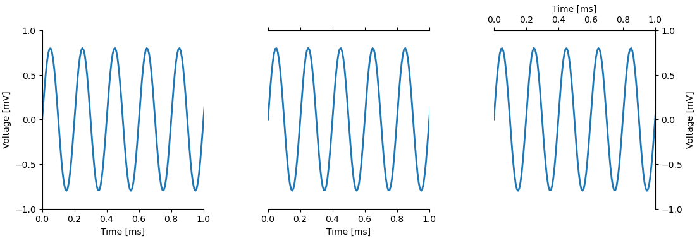
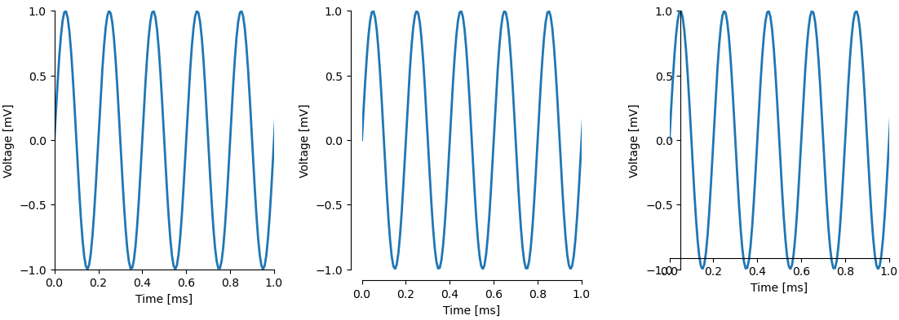
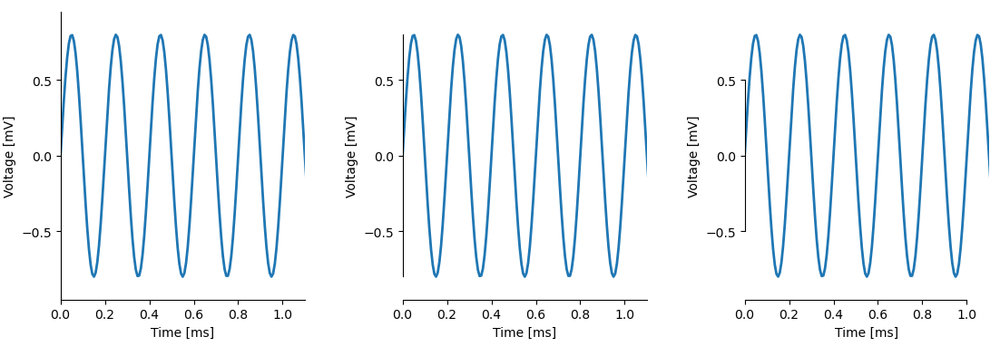
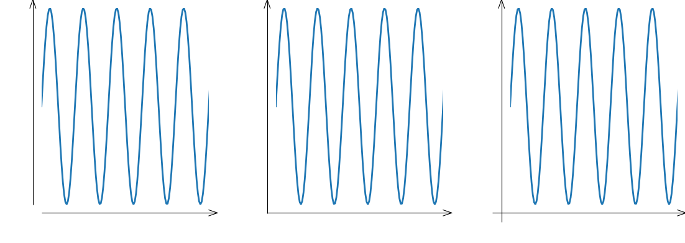

Module plottools.spines
Modify the appearance of spines.
Axes member functions
show_spines(): show and hide spines and corresponding tick marks.set_spines_outward(): set the specified spines outward.set_spines_zero(): set the position of the specified spines to the data value of the other axis.set_spines_bounds(): set bounds for the specified spines.arrow_spines(): spines with arrows.
Figure member functions
Same functions as the ones for the Axes. Functions are called on all figure axes.
show_spines(): show and hide spines and corresponding tick marks.set_spines_outward(): set the specified spines outward.set_spines_zero(): set the position of the specified spines to the data value of the other axis.set_spines_bounds(): set bounds for the specified spines.arrow_spines(): spines with arrows.
Settings
spines_params(): set default spine appearance.
matplotlib.rcParams defined by the spines module:
axes.spines.show : 'lrtb'
axes.spines.offsets: {'lrtb': 0}
axes.spines.positions: {'lrtb': None}
axes.spines.bounds : {'lrtb': 'full'}
axes.spines.arrows: '',
axes.spines.arrows.flushx: 0.0
axes.spines.arrows.flushy: 0.0
axes.spines.arrows.extendx: 1.0
axes.spines.arrows.extendy: 1.0
axes.spines.arrows.height: 10.0
axes.spines.arrows.ratio: 0.7
axes.spines.arrows.overhang: 1.0
axes.spines.twinx: 'r'
axes.spines.twiny: 't'
axes.spines.inset.show : 'lrtb'
axes.spines.inset.offsets: {'lrtb': 0}
axes.spines.inset.positions: {'lrtb': None}
axes.spines.inset.bounds : {'lrtb': 'full'}
Install/uninstall spines functions
You usually do not need to call these functions. Upon loading the spines
module, install_spines() is called automatically.
install_spines(): install functions of the spines module in matplotlib.uninstall_spines(): uninstall all code of the spines module from matplotlib.
Expand source code
"""Modify the appearance of spines.
## Axes member functions
- `show_spines()`: show and hide spines and corresponding tick marks.
- `set_spines_outward()`: set the specified spines outward.
- `set_spines_zero()`: set the position of the specified spines
to the data value of the other axis.
- `set_spines_bounds()`: set bounds for the specified spines.
- `arrow_spines()`: spines with arrows.
## Figure member functions
Same functions as the ones for the Axes. Functions are called on all
figure axes.
- `show_spines()`: show and hide spines and corresponding tick marks.
- `set_spines_outward()`: set the specified spines outward.
- `set_spines_zero()`: set the position of the specified spines to
the data value of the other axis.
- `set_spines_bounds()`: set bounds for the specified spines.
- `arrow_spines()`: spines with arrows.
## Settings
- `spines_params()`: set default spine appearance.
`matplotlib.rcParams` defined by the spines module:
```py
axes.spines.show : 'lrtb'
axes.spines.offsets: {'lrtb': 0}
axes.spines.positions: {'lrtb': None}
axes.spines.bounds : {'lrtb': 'full'}
axes.spines.arrows: '',
axes.spines.arrows.flushx: 0.0
axes.spines.arrows.flushy: 0.0
axes.spines.arrows.extendx: 1.0
axes.spines.arrows.extendy: 1.0
axes.spines.arrows.height: 10.0
axes.spines.arrows.ratio: 0.7
axes.spines.arrows.overhang: 1.0
axes.spines.twinx: 'r'
axes.spines.twiny: 't'
axes.spines.inset.show : 'lrtb'
axes.spines.inset.offsets: {'lrtb': 0}
axes.spines.inset.positions: {'lrtb': None}
axes.spines.inset.bounds : {'lrtb': 'full'}
```
## Install/uninstall spines functions
You usually do not need to call these functions. Upon loading the spines
module, `install_spines()` is called automatically.
- `install_spines()`: install functions of the spines module in matplotlib.
- `uninstall_spines()`: uninstall all code of the spines module from matplotlib.
"""
import numpy as np
import matplotlib as mpl
import matplotlib.pyplot as plt
import matplotlib.rcsetup as mrc
import matplotlib.ticker as ticker
import matplotlib.lines as lines
import matplotlib.patches as patches
import matplotlib.transforms as transforms
from .rcsetup import _validate_dict
def show_spines(ax, spines='lrtb'):
""" Show and hide spines.
Parameters
----------
ax: matplotlib figure, matplotlib axis, or list of matplotlib axes
Axis on which spine and ticks visibility is manipulated.
If figure, then apply manipulations on all axes of the figure.
If list of axes, apply manipulations on each of the given axes.
spines: string
Specify which spines and ticks should be shown.
All other ones or hidden.
'l' is the left spine, 'r' the right spine,
't' the top one and 'b' the bottom one.
E.g. 'lb' shows the left and bottom spine, and hides the top
and and right spines, as well as their tick marks and labels.
'' shows no spines at all.
'lrtb' shows all spines and tick marks.
Examples
--------
```py
import matplotlib.pyplot as plt
import plottools.spines
fig, (ax0, ax1, ax2) = plt.subplots(1, 3)
ax0.show_spines('lb')
ax1.show_spines('bt')
ax2.show_spines('tr')
```

"""
# collect spine visibility:
xspines = []
if 't' in spines:
xspines.append('top')
if 'b' in spines:
xspines.append('bottom')
yspines = []
if 'l' in spines:
yspines.append('left')
if 'r' in spines:
yspines.append('right')
# collect axes:
if isinstance(ax, (list, tuple, np.ndarray)):
axs = ax
elif hasattr(ax, 'get_axes'):
# ax is figure:
axs = ax.get_axes()
else:
axs = [ax]
if not isinstance(axs, (list, tuple)):
axs = [axs]
for ax in axs:
# non-cartesian projections are not handled yet:
if not 'top' in ax.spines or not 'bottom' in ax.spines or \
not 'left' in ax.spines or not 'right' in ax.spines:
continue
# hide spines:
ax.spines['top'].set_visible('top' in xspines)
ax.spines['bottom'].set_visible('bottom' in xspines)
ax.spines['left'].set_visible('left' in yspines)
ax.spines['right'].set_visible('right' in yspines)
# ticks:
if len(xspines) == 0:
ax.xaxis.set_ticks_position('none')
ax.xaxis.label.set_visible(False)
ax.xaxis._orig_major_locator = ax.xaxis.get_major_locator()
ax.xaxis.set_major_locator(ticker.NullLocator())
else:
if hasattr(ax.xaxis, '_orig_major_locator'):
ax.xaxis.set_major_locator(ax.xaxis._orig_major_locator)
delattr(ax.xaxis, '_orig_major_locator')
elif isinstance(ax.xaxis.get_major_locator(), ticker.NullLocator):
ax.xaxis.set_major_locator(ticker.AutoLocator())
if len(xspines) == 1:
ax.xaxis.set_ticks_position(xspines[0])
ax.xaxis.set_label_position(xspines[0])
else:
ax.xaxis.set_ticks_position('both')
ax.xaxis.set_label_position('bottom')
if len(yspines) == 0:
ax.yaxis.set_ticks_position('none')
ax.yaxis.label.set_visible(False)
ax.yaxis._orig_major_locator = ax.yaxis.get_major_locator()
ax.yaxis.set_major_locator(ticker.NullLocator())
else:
if hasattr(ax.yaxis, '_orig_major_locator'):
ax.yaxis.set_major_locator(ax.yaxis._orig_major_locator)
delattr(ax.yaxis, '_orig_major_locator')
elif isinstance(ax.yaxis.get_major_locator(), ticker.NullLocator):
ax.yaxis.set_major_locator(ticker.AutoLocator())
if len(yspines) == 1:
ax.yaxis.set_ticks_position(yspines[0])
ax.yaxis.set_label_position(yspines[0])
else:
ax.yaxis.set_ticks_position('both')
ax.yaxis.set_label_position('left')
def set_spines_outward(ax, spines, offset=0):
""" Set the specified spines outward.
Parameters
----------
ax: matplotlib figure, matplotlib axis, or list of matplotlib axes
Axis on which spines are set outwards.
If figure, then apply manipulations on all axes of the figure.
If list of axes, apply manipulations on each of the given axes.
spines: string or dictionary
- string: specify to which spines the offset given by
the `offset` argument should be applied.
'l' is the left spine, 'r' the right spine,
't' the top one and 'b' the bottom one.
E.g. 'lb' applies the offset to the left and bottom spine.
- dictionary: apply offsets to several sets of spines individually.
Dictionary keys are strings specifying the spines as described above.
The corresponding values specify the offset by which the spines
are moved outwards.
offset: float or None
Move the specified spines outward by that many pixels.
If None. leave the position of the spines untouched.
Examples
--------
```py
import matplotlib.pyplot as plt
import plottools.spines
fig, (ax0, ax1, ax2) = plt.subplots(1, 3)
ax0.set_spines_outward('lb', 0)
# set left and bottom spine outwards by 10 pixels:
ax1.set_spines_outward('lb', 10)
# set left and bottom spine inwards by 10 pixels:
ax2.set_spines_outward('lb', -10)
```

```py
# set the left and right spines outwards by 10 pixels and the top and bottom ones by 5:
ax0.set_spines_outward({'lr': 10, 'bt': 5})
# set the bottom spine of all axis of the figure outward by 5 pixels:
fig.set_spines_outward('b', 5)
```
"""
if isinstance(spines, dict):
for sp in spines:
set_spines_outward(ax, sp, spines[sp])
return
if offset is None:
return
# collect axes:
if isinstance(ax, (list, tuple, np.ndarray)):
axs = ax
elif hasattr(ax, 'get_axes'):
axs = ax.get_axes()
else:
axs = [ax]
if not isinstance(axs, (list, tuple)):
axs = [axs]
# collect spine ids:
spines_list = []
if 't' in spines:
spines_list.append('top')
if 'b' in spines:
spines_list.append('bottom')
if 'l' in spines:
spines_list.append('left')
if 'r' in spines:
spines_list.append('right')
for ax in axs:
# non-cartesian projections are not handled yet:
if not 'top' in ax.spines or not 'bottom' in ax.spines or \
not 'left' in ax.spines or not 'right' in ax.spines:
continue
for sp in spines_list:
visible = ax.spines[sp].get_visible()
if sp in ['left', 'right']:
loc = ax.yaxis.get_major_locator()
else:
loc = ax.xaxis.get_major_locator()
ax.spines[sp].set_position(('outward', offset))
if sp in ['left', 'right']:
ax.yaxis.set_major_locator(loc)
else:
ax.xaxis.set_major_locator(loc)
ax.spines[sp].set_visible(visible)
def set_spines_zero(ax, spines, pos=0):
""" Set the position of the specified spines to the data value of the other axis.
Parameters
----------
ax: matplotlib figure, matplotlib axis, or list of matplotlib axes
Axis on which the spine position is set.
If figure, then apply manipulations on all axes of the figure.
If list of axes, apply manipulations on each of the given axes.
spines: string or dictionary
- string: specify which spines should be set.
'l' is the left spine, 'r' the right spine,
't' the top one and 'b' the bottom one.
E.g. 'lb' applies the position to the left and bottom spine.
- dictionary: apply spine position to several sets of
spines individually.
Dictionary keys are strings specifying the spines as described above.
The corresponding values specify the position of the spines.
pos: float or None
Position of the spine in data values of the other axis.
If None, leave spine position untouched.
Examples
--------
```py
# set left and right spine to the origin of the data coordinates:
ax.set_spines_zero('lr')
# set the left spine to the origin of the x-axis, and the bottom spine
# at -1 on the y-axis:
ax.set_spines_zero({'l': 0, 'b': -1})
# set the left and the right spine of all axis of the figure to the origin:
fig.set_spines_zero('lb')
```
"""
if isinstance(spines, dict):
for sp in spines:
set_spines_zero(ax, sp, spines[sp])
return
if pos is None:
return
# collect axes:
if isinstance(ax, (list, tuple, np.ndarray)):
axs = ax
elif hasattr(ax, 'get_axes'):
axs = ax.get_axes()
else:
axs = [ax]
if not isinstance(axs, (list, tuple)):
axs = [axs]
# collect spine ids:
spines_list = []
if 't' in spines:
spines_list.append('top')
if 'b' in spines:
spines_list.append('bottom')
if 'l' in spines:
spines_list.append('left')
if 'r' in spines:
spines_list.append('right')
for ax in axs:
for sp in spines_list:
visible = ax.spines[sp].get_visible()
if sp in ['left', 'right']:
loc = ax.yaxis.get_major_locator()
else:
loc = ax.xaxis.get_major_locator()
ax.spines[sp].set_position(('data', pos))
if sp in ['left', 'right']:
ax.yaxis.set_major_locator(loc)
else:
ax.xaxis.set_major_locator(loc)
ax.spines[sp].set_visible(visible)
def set_spines_bounds(ax, spines, bounds='full'):
""" Set bounds for the specified spines.
Parameters
----------
ax: matplotlib figure, matplotlib axis, or list of matplotlib axes
Axis on which spine bounds are set.
If figure, then apply manipulations on all axes of the figure.
If list of axes, apply manipulations on each of the given axes.
spines: string or dictionary
- string: specify to which spines the bound setttings given by
the `bounds` argument should be applied.
'l' is the left spine, 'r' the right spine,
't' the top one and 'b' the bottom one.
E.g. 'lb' applies the bounds settings to the left and bottom spine.
- dictionary: apply bound settings for several sets of spines.
Dictionary keys are strings specifying the spines as described above.
The corresponding values specify the bound settings
(see `bounds` below for possible values and their effects).
bounds: 'full', 'data', 'ticks' or float or tuple thereof
- 'full': draw the spine in its full length (default)
- 'data': do not draw the spine beyond the data range,
uses matplotlib's smart_bounds
- 'ticks': draw the spine only within the first and
last major tick mark.
- tuple: two values of 'full', 'data', 'ticks' or float specifying
the lower and upper bound separately.
Raises
------
ValueError:
If an invalid `bounds` argument was specified.
Examples
--------
```py
import matplotlib.pyplot as plt
import plottools.spines
fig, (ax0, ax1, ax2) = plt.subplots(1, 3)
ax0.set_spines_bounds('lb', 'full')
ax1.set_spines_bounds('lb', 'data')
ax2.set_spines_bounds('lb', 'ticks')
```

"""
if isinstance(spines, dict):
for sp in spines:
set_spines_bounds(ax, sp, spines[sp])
else:
# collect axes:
if isinstance(ax, (list, tuple, np.ndarray)):
axs = ax
elif hasattr(ax, 'get_axes'):
axs = ax.get_axes()
else:
axs = [ax]
if not isinstance(axs, (list, tuple)):
axs = [axs]
if isinstance(bounds, (tuple, list)):
if len(bounds) != 2:
raise ValueError('Invalid number of elements for bounds. Should be one or two.')
if not np.isscalar(bounds[0]) and bounds[0] not in ['full', 'data', 'ticks']:
raise ValueError('Invalid value for lower bound: %s. Should be one of "full", "data", "ticks")' % bounds[0])
if not np.isscalar(bounds[1]) and bounds[1] not in ['full', 'data', 'ticks']:
raise ValueError('Invalid value for upper bound: %s. Should be one of "full", "data", "ticks")' % bounds[1])
lower_bound = bounds[0]
upper_bound = bounds[1]
else:
if bounds not in ['full', 'data', 'ticks']:
raise ValueError('Invalid value for bounds: %s. Should be one of "full", "data", "ticks")' % bounds)
lower_bound = bounds
upper_bound = bounds
# collect spine ids:
spines_list = []
if 't' in spines:
spines_list.append('top')
if 'b' in spines:
spines_list.append('bottom')
if 'l' in spines:
spines_list.append('left')
if 'r' in spines:
spines_list.append('right')
for ax in axs:
# non-cartesian projections are not handled yet:
if not 'top' in ax.spines or not 'bottom' in ax.spines or \
not 'left' in ax.spines or not 'right' in ax.spines:
continue
for sp in spines_list:
ax.spines[sp].bounds_style = (lower_bound, upper_bound)
def arrow_spines(ax, spines, flush=None, extend=None, height=None, ratio=None,
overhang=None, lw=None, color=None):
"""Spines with arrows.
Parameters
----------
ax: matplotlib figure, matplotlib axis, or list of matplotlib axes
Axis on which spine and ticks visibility is manipulated.
If figure, then apply manipulations on all axes of the figure.
If list of axes, apply manipulations on each of the given axes.
spines: string
Specify which spines should be shown as arrows.
'l' is the left spine, 'r' the right spine,
't' the top one and 'b' the bottom one.
flush: float or None
Extend the tail of the arrow. If the other axis is set
outward, then extend the tail by this factor times the outward
set distance of the spine of the other axis. That is, if
`flush` is set to 1.0, the tail of the arrow just touches the
other spine.
If the other axis is set to a specific data coordinate, then
extend the tail by `flush` times the height of the arrow.
If `None` set to `rcParams['axes.spines.arrows.flushx']` for
horizontal spines or `rcParams['axes.spines.arrows.flushy']`
for vertical spines.
extend: float or None
Extend the length of the spine by this factor times the height
of the arrow.
If `None` set to `rcParams['axes.spines.arrows.extendx']` for
horizontal spines or `rcParams['axes.spines.arrows.extendy']`
for vertical spines.
height: float
Height (length) of the arrow in points.
If `None` set to `rcParams['axes.spines.arrows.height']`.
ratio: float
Width of arrow is `height` times `ratio`.
If `None` set to `rcParams['axes.spines.arrows.ratio']`.
overhang: float
Fraction that the arrow is swept back: 0 is triangular arrow,
1 is pure line arrow, negative values extend the arrow backwards.
If `None` set to `rcParams['axes.spines.arrows.overhang']`.
lw: float or None
Line width of spine. If `None` set to `rcParams['axes.linewidth']`.
color: matplotlib color specificaion or None
Color of spine. If `None` set to `rcParams['axes.edgecolor']`.
Examples
--------
```py
import matplotlib.pyplot as plt
from plottools.spines import spines_params
fig, (ax0, ax1, ax2) = plt.subplots(1, 3)
spines_params(spines='', height=10)
ax0.arrow_spines('lb')
ax1.arrow_spines('lb', flush=1.0)
ax2.arrow_spines('lb', flush=2.0)
```

"""
# collect spine visibility:
spns = []
if 't' in spines:
spns.append('top')
if 'b' in spines:
spns.append('bottom')
if 'l' in spines:
spns.append('left')
if 'r' in spines:
spns.append('right')
# collect axes:
if isinstance(ax, (list, tuple, np.ndarray)):
axs = ax
elif hasattr(ax, 'get_axes'):
axs = ax.get_axes()
else:
axs = [ax]
if not isinstance(axs, (list, tuple)):
axs = [axs]
# mark spines for arrow plotting:
for ax in axs:
for sp in spns:
ax.spines[sp].arrow = dict(flush=flush, extend=extend,
height=height, ratio=ratio, overhang=overhang,
lw=lw, color=color)
def __update_spines(fig):
""" Update bounds and arrows of spines.
This is needed for applying the 'ticks' setting of
`set_spines_bounds()` and to draw aspines with arrows. The spines
module patches the `plt.show()`, `fig.show()`, and `fig.savefig()`
functions to first call `__update_spines()`. This way this function
is called automatically right before the figure is drawn.
Parameters
----------
fig: matplotlib figure
"""
for ax in fig.get_axes():
for spn in ['left', 'right', 'top', 'bottom']:
if not spn in ax.spines:
continue
sp = ax.spines[spn]
if hasattr(sp, 'bounds_style'):
# get view range, data range and ticks:
axis = ax.xaxis if spn in ['top', 'bottom'] else ax.yaxis
view = np.sort(axis.get_view_interval())
data = np.sort(axis.get_data_interval())
locs = np.sort(np.hstack((axis.get_majorticklocs(),
axis.get_minorticklocs())))
# limit data to view:
if data[0] < view[0]:
data[0] = view[0]
if data[1] > view[1]:
data[1] = view[1]
# limit ticks to view:
eps = 0.001*np.diff(view)[0]
locs = locs[(locs>=np.min(view)-eps)&(locs<=np.max(view)+eps)]
# spines bounds:
lower = view[0]
upper = view[1]
if sp.bounds_style[0] == 'ticks':
lower = locs[0] if len(locs) else view[0]
elif sp.bounds_style[0] == 'data':
lower = data[0]
elif sp.bounds_style[0] != 'full':
lower = sp.bounds_style[0]
if sp.bounds_style[1] == 'ticks':
upper = locs[-1] if len(locs) else view[1]
elif sp.bounds_style[1] == 'data':
upper = data[1]
elif sp.bounds_style[1] != 'full':
upper = sp.bounds_style[1]
sp.set_bounds(lower, upper)
if len(locs) > 0 and (locs[0] < lower-eps or locs[-1] > upper+eps):
locs = locs[(locs >= lower-eps) & (locs <= upper+eps)]
axis.set_major_locator(ticker.FixedLocator(locs))
if hasattr(sp, 'arrow'):
major = int(mpl.__version__.split('.')[0])
fac = 1.38 if major > 2 else 1.1
figw, figh = ax.get_figure().get_size_inches()*fig.dpi
_, _, w, h = ax.get_position().bounds
xpfac = fac/(w*figw)
ypfac = fac/(h*figh)
xdpos = lambda posx: (posx - ax.get_xlim()[0])/np.diff(ax.get_xlim())[0]
ydpos = lambda posy: (posy - ax.get_ylim()[0])/np.diff(ax.get_ylim())[0]
flush = sp.arrow['flush']
extend = sp.arrow['extend']
height = sp.arrow['height']
if height is None:
height = mpl.rcParams.get('axes.spines.arrows.height', 10.0)
ratio = sp.arrow['ratio']
if ratio is None:
ratio = mpl.rcParams.get('axes.spines.arrows.ratio', 0.7)
width = 0.5*ratio*height
overhang = sp.arrow['overhang']
if overhang is None:
overhang = mpl.rcParams.get('axes.spines.arrows.overhang', 1.0)
lw = sp.arrow['lw']
if lw is None:
lw = mpl.rcParams['axes.linewidth']
color = sp.arrow['color']
if color is None:
color = mpl.rcParams['axes.edgecolor']
linestyle = dict(lw=lw, color=color)
if spn in ['left', 'right']:
sp.set_visible(False)
x = 0.0 if spn == 'left' else 1.0
start = np.array([x, 0.0])
stop = np.array([x, 1.0])
ofac = -1.0 if spn == 'left' else 1.0
bounds = sp.get_bounds()
if bounds is not None:
y0, y1 = ax.get_ylim()
start = np.array([x, (bounds[0]-y0)/(y1-y0)])
stop = np.array([x, (bounds[1]-y0)/(y1-y0)])
pos = sp.get_position()
if pos and pos[0] == 'outward':
start[0] += xpfac*ofac*pos[1]
stop[0] += xpfac*ofac*pos[1]
elif pos and pos[0] == 'data':
start[0] = xdpos(pos[1])
stop[0] = xdpos(pos[1])
flushy = flush
if flushy is None:
flushy = mpl.rcParams.get('axes.spines.arrows.flushy', 0.0)
if flushy:
pos = ax.spines['bottom'].get_position()
if pos and pos[0] == 'outward':
start[1] -= ypfac*flushy*(pos[1]+0.5*lw)
elif pos and pos[0] == 'data':
start[1] -= ypfac*flushy*height
extendy = extend
if extendy is None:
extendy = mpl.rcParams.get('axes.spines.arrows.extendy', 1.0)
if extendy:
stop[1] += ypfac*extendy*height
if overhang > 0.9:
ax.add_line(lines.Line2D([start[0], stop[0]], [start[1], stop[1]],
transform=ax.transAxes, clip_on=False,
solid_capstyle='butt', **linestyle))
ax.add_line(lines.Line2D([stop[0]-xpfac*width, stop[0],
stop[0]+xpfac*width],
[stop[1]-ypfac*height, stop[1],
stop[1]-ypfac*height],
transform=ax.transAxes, clip_on=False,
solid_joinstyle='miter', **linestyle))
else:
path = np.zeros((7, 2))
path[0,:] = (start[0]-0.5*xpfac*lw, start[1])
path[1,:] = (stop[0]-0.5*xpfac*lw, stop[1]-ypfac*(1.0-overhang)*height)
path[2,:] = (stop[0]-xpfac*width, stop[1]-ypfac*height)
path[3,:] = (stop[0], stop[1])
path[4,:] = (stop[0]+xpfac*width, stop[1]-ypfac*height)
path[5,:] = (stop[0]+0.5*xpfac*lw, stop[1]-ypfac*(1.0-overhang)*height)
path[6,:] = (start[0]+0.5*xpfac*lw, start[1])
ax.add_patch(patches.Polygon(path, closed=True,
ec='none', fc=color, lw=0.0,
transform=ax.transAxes, clip_on=False))
if spn in ['bottom', 'top']:
sp.set_visible(False)
y = 0.0 if spn == 'bottom' else 1.0
start = np.array([0.0, y])
stop = np.array([1.0, y])
ofac = -1.0 if spn == 'bottom' else 1.0
bounds = sp.get_bounds()
if bounds is not None:
x0, x1 = ax.get_xlim()
start = np.array([(bounds[0]-x0)/(x1-x0), y])
stop = np.array([(bounds[1]-x0)/(x1-x0), y])
pos = sp.get_position()
if pos and pos[0] == 'outward':
start[1] += ypfac*ofac*pos[1]
stop[1] += ypfac*ofac*pos[1]
elif pos and pos[0] == 'data':
start[1] = ydpos(pos[1])
stop[1] = ydpos(pos[1])
flushx = flush
if flushx is None:
flushx = mpl.rcParams.get('axes.spines.arrows.flushx', 0.0)
if flushx:
pos = ax.spines['left'].get_position()
if pos and pos[0] == 'outward':
start[0] -= xpfac*flushx*(pos[1]+0.5*lw)
elif pos and pos[0] == 'data':
start[0] -= xpfac*flushx*height
extendx = extend
if extendx is None:
extendx = mpl.rcParams.get('axes.spines.arrows.extendx', 1.0)
if extendx:
stop[0] += xpfac*extendx*height
if overhang > 0.9:
ax.add_line(lines.Line2D([start[0], stop[0]], [start[1], stop[1]],
transform=ax.transAxes, clip_on=False,
solid_capstyle='butt', **linestyle))
ax.add_line(lines.Line2D([stop[0]-xpfac*height, stop[0],
stop[0]-xpfac*height],
[stop[1]-ypfac*width, stop[1],
stop[1]+ypfac*width],
transform=ax.transAxes, clip_on=False,
solid_joinstyle='miter', **linestyle))
else:
path = np.zeros((7, 2))
path[0,:] = (start[0], start[1]-0.5*ypfac*lw)
path[1,:] = (stop[0]-xpfac*(1.0-overhang)*height, stop[1]-0.5*ypfac*lw)
path[2,:] = (stop[0]-xpfac*height, stop[1]-ypfac*width)
path[3,:] = (stop[0], stop[1])
path[4,:] = (stop[0]-xpfac*height, stop[1]+ypfac*width)
path[5,:] = (stop[0]-xpfac*(1.0-overhang)*height, stop[1]+0.5*ypfac*lw)
path[6,:] = (start[0], start[1]+0.5*ypfac*lw)
ax.add_patch(patches.Polygon(path, closed=True,
ec='none', fc=color, lw=0.0,
transform=ax.transAxes, clip_on=False))
def __fig_show_spines(fig, *args, **kwargs):
""" Call `__update_spines()` on the figure before showing it.
"""
fig.__update_spines()
fig.__show_orig_spines(*args, **kwargs)
def __fig_savefig_spines(fig, *args, **kwargs):
""" Call `__update_spines()` on the figure before saving it.
"""
fig.__update_spines()
fig.__savefig_orig_spines(*args, **kwargs)
def __plt_show_spines(*args, **kwargs):
""" Call `__update_spines()` on all figures before showing them.
"""
for fig in map(plt.figure, plt.get_fignums()):
fig.__update_spines()
plt.__show_orig_spines(*args, **kwargs)
def __plt_savefig_spines(*args, **kwargs):
""" Call `__update_spines()` on the current figure before saving it.
"""
plt.gcf().__update_spines()
plt.__savefig_orig_spines(*args, **kwargs)
def __axes_init_spines__(ax, *args, **kwargs):
""" Apply default spine settings to a new Axes instance.
"""
ax.__init__orig_spines(*args, **kwargs)
ax.show_spines(mpl.rcParams['axes.spines.show'])
if isinstance(mpl.rcParams['axes.spines.offsets'], dict):
ax.set_spines_outward(mpl.rcParams['axes.spines.offsets'])
else:
ax.set_spines_outward('lrtb', mpl.rcParams['axes.spines.offsets'])
if isinstance(mpl.rcParams['axes.spines.positions'], dict):
ax.set_spines_zero(mpl.rcParams['axes.spines.positions'])
else:
ax.set_spines_zero('lrtb', mpl.rcParams['axes.spines.positions'])
ax.set_spines_bounds(mpl.rcParams['axes.spines.bounds'])
ax.arrow_spines(mpl.rcParams['axes.spines.arrows'])
def __twinx_spines(ax, *args, **kwargs):
""" Mark a twinx axes such that the corresponding spine properties can be set. """
ax_spines = mpl.rcParams['axes.spines.show']
if 'l' in mpl.rcParams['axes.spines.twinx'] and 'l' not in ax_spines:
ax_spines += 'l'
if 'r' in mpl.rcParams['axes.spines.twinx'] and 'r' not in ax_spines:
ax_spines += 'r'
axt_spines = mpl.rcParams['axes.spines.twinx']
if 'b' in mpl.rcParams['axes.spines.show'] and 'b' not in axt_spines:
axt_spines += 'b'
if 't' in mpl.rcParams['axes.spines.show'] and 't' not in axt_spines:
axt_spines += 'b'
ax.show_spines(ax_spines)
if isinstance(mpl.rcParams['axes.spines.offsets'], dict):
ax.set_spines_outward(mpl.rcParams['axes.spines.offsets'])
else:
ax.set_spines_outward('lrtb', mpl.rcParams['axes.spines.offsets'])
if isinstance(mpl.rcParams['axes.spines.positions'], dict):
ax.set_spines_zero(mpl.rcParams['axes.spines.positions'])
else:
ax.set_spines_zero('lrtb', mpl.rcParams['axes.spines.positions'])
orig_default_spines = mpl.rcParams['axes.spines.show']
mpl.rcParams.update({'axes.spines.show': axt_spines})
axt = ax.__twinx_orig_spines(*args, **kwargs)
mpl.rcParams.update({'axes.spines.show': orig_default_spines})
return axt
def __twiny_spines(ax, *args, **kwargs):
""" Mark a twiny axes such that the corresponding spine properties can be set. """
ax_spines = mpl.rcParams['axes.spines.show']
if 't' in mpl.rcParams['axes.spines.twiny'] and 't' not in ax_spines:
ax_spines += 't'
if 'b' in mpl.rcParams['axes.spines.twiny'] and 'b' not in ax_spines:
ax_spines += 'b'
axt_spines = mpl.rcParams['axes.spines.twiny']
if 'l' in mpl.rcParams['axes.spines.show'] and 'l' not in axt_spines:
axt_spines += 'l'
if 'r' in mpl.rcParams['axes.spines.show'] and 'r' not in axt_spines:
axt_spines += 'r'
ax.show_spines(ax_spines)
if isinstance(mpl.rcParams['axes.spines.offsets'], dict):
ax.set_spines_outward(mpl.rcParams['axes.spines.offsets'])
else:
ax.set_spines_outward('lrtb', mpl.rcParams['axes.spines.offsets'])
if isinstance(mpl.rcParams['axes.spines.positions'], dict):
ax.set_spines_zero(mpl.rcParams['axes.spines.positions'])
else:
ax.set_spines_zero('lrtb', mpl.rcParams['axes.spines.positions'])
orig_default_spines = mpl.rcParams['axes.spines.show']
mpl.rcParams.update({'axes.spines.show': axt_spines})
axt = ax.__twiny_orig_spines(*args, **kwargs)
mpl.rcParams.update({'axes.spines.show': orig_default_spines})
return axt
def __inset_spines(ax, *args, **kwargs):
""" Mark an inset axes such that the corresponding spine properties can be set. """
# save default settings for normal axes:
orig_default_spines = mpl.rcParams['axes.spines.show']
orig_default_spines_offsets = mpl.rcParams['axes.spines.offsets']
orig_default_spines_positions = mpl.rcParams['axes.spines.positions']
orig_default_spines_bounds = mpl.rcParams['axes.spines.bounds']
# override settings with values for insets:
mpl.rcParams.update({'axes.spines.show': mpl.rcParams['axes.spines.inset.show']})
mpl.rcParams.update({'axes.spines.offsets': mpl.rcParams['axes.spines.inset.offsets']})
mpl.rcParams.update({'axes.spines.positions': mpl.rcParams['axes.spines.inset.positions']})
mpl.rcParams.update({'axes.spines.bounds': mpl.rcParams['axes.spines.inset.bounds']})
# create inset axes:
axi = ax.__inset_orig_spines(*args, **kwargs)
# restore default settings for normal axes:
mpl.rcParams.update({'axes.spines.show': orig_default_spines})
mpl.rcParams.update({'axes.spines.offsets': orig_default_spines_offsets})
mpl.rcParams.update({'axes.spines.positions': orig_default_spines_positions})
mpl.rcParams.update({'axes.spines.bounds': orig_default_spines_bounds})
return axi
def spines_params(spines=None, spines_offsets=None,
spines_positions=None, spines_bounds=None,
arrows=None, flushx=None, extendx=None, flushy=None,
extendy=None, height=None, ratio=None,
overhang=None, twinx_spines=None, twiny_spines=None,
inset_spines=None, inset_spines_offsets=None,
inset_spines_positions=None,
inset_spines_bounds=None, color=None,
linewidth=None):
""" Set default spine appearance.
Only parameters that are not `None` are updated.
Call this function *before* you create a matplotlib figure.
Parameters
----------
spines: string
Spines to be shown. Sets rcParams `axes.spines.show`.
See `spines.show_spines()` for details.
spines_offsets: dict or float
Offsets for moving spines outward. Sets rcParams `axes.spines.offsets`.
See `spines.set_spines_outward()` for details.
spines_positions: dict or float
Positions for spines in data coordinates.
Sets rcParams `axes.spines.positions`.
See `spines.set_spines_zero()` for details.
spines_bounds: dict
Bounds for the spines. Sets rcParams `axes.spines.bounds`.
See `spines.set_spines_bounds()` for details.
arrows: string
Spines as arrows. Sets rcParams `axes.spines.arrows`.
See `spines.arrow_spines()` for details.
flushx: float
Extend tail of arrowed top or bottom spine by this factor times
offset of other axis
(if set outwards) or by this factor times the height of the arrow
(if set to a data coordinate).
Sets rcParams `axes.spines.arrows.flushx`.
See `spines.arrow_spines()` for details.
extendx: float
Extend head of arrowed top or bottom spine by this factor times
height of arrow.
Sets rcParams `axes.spines.arrows.extendx`.
See `spines.arrow_spines()` for details.
flushy: float
Extend tail of arrowed left or right spine by this factor times
offset of other axis
(if set outwards) or by this factor times the height of the arrow
(if set to a data coordinate).
Sets rcParams `axes.spines.arrows.flushy`.
See `spines.arrow_spines()` for details.
extendy: float
Extend head of arrowed left or right spine by this factor times
height of arrow.
Sets rcParams `axes.spines.arrows.extendy`.
See `spines.arrow_spines()` for details.
height: float
Height of arrow head of arrowed spine in points.
Sets rcParams `axes.spines.arrows.height`.
See `spines.arrow_spines()` for details.
ratio: float
Width relative to height of arrow head of arrowed spine in points.
Sets rcParams `axes.spines.arrows.ratio`.
See `spines.arrow_spines()` for details.
overhang: float
Fraction that the arrow is swept back: 0 is triangular arrow,
1 is pure line arrow, negative values extend the arrow backwards.
Sets rcParams `axes.spines.arrows.overhang`.
See `spines.arrow_spines()` for details.
twinx_spines: string
Spines to be shown for `twinx()` axes.
Sets rcParams `axes.spines.twinx`.
See `spines.show_spines()` for details.
Twinned axes get the same default offsets, positions, and bounds
as the defaults for normal axes.
twiny_spines: string
Spines to be shown for `twiny()` axes.
Sets rcParams `axes.spines.twiny`.
See `spines.show_spines()` for details.
Twinned axes get the same default offsets, positions, and bounds
as the defaults for normal axes.
inset_spines: string
Spines to be shown for an inset.
Sets rcParams `axes.spines.inset.show`.
See `spines.show_spines()` for details.
inset_spines_offsets: dict
Offsets for moving spines outward for an inset.
Sets rcParams `axes.spines.inset.offsets`.
See `spines.set_spines_outward()` for details.
inset_spines_positions: dict
Positions of spines in data coordinates for an inset.
Sets rcParams `axes.spines.inset.positions`.
See `spines.set_spines_zero()` for details.
inset_spines_bounds: dict
Bounds for the spines of an inset.
Sets rcParams `axes.spines.inset.bounds`.
See `spines.set_spines_bounds()` for details.
color: matplotlib color
Color of spines. Sets rcParam `axes.edgecolor`.
linewidth: float
Width of spines. Sets rcParam `axes.linewidth`.
"""
if spines is not None and 'axes.spines.show' in mrc._validators:
mpl.rcParams['axes.spines.show'] = spines
if spines_offsets is not None and 'axes.spines.offsets' in mrc._validators:
mpl.rcParams['axes.spines.offsets'] = spines_offsets
if spines_positions is not None and 'axes.spines.positions' in mrc._validators:
mpl.rcParams['axes.spines.positions'] = spines_positions
if spines_bounds is not None and 'axes.spines.bounds' in mrc._validators:
mpl.rcParams['axes.spines.bounds'] = spines_bounds
if arrows is not None and 'axes.spines.arrows' in mrc._validators:
mpl.rcParams['axes.spines.arrows'] = arrows
if flushx is not None and 'axes.spines.arrows.flushx' in mrc._validators:
mpl.rcParams['axes.spines.arrows.flushx'] = flushx
if extendx is not None and 'axes.spines.arrows.extendx' in mrc._validators:
mpl.rcParams['axes.spines.arrows.extendx'] = extendx
if flushy is not None and 'axes.spines.arrows.flushy' in mrc._validators:
mpl.rcParams['axes.spines.arrows.flushy'] = flushy
if extendy is not None and 'axes.spines.arrows.extendy' in mrc._validators:
mpl.rcParams['axes.spines.arrows.extendy'] = extendy
if height is not None and 'axes.spines.arrows.height' in mrc._validators:
mpl.rcParams['axes.spines.arrows.height'] = height
if ratio is not None and 'axes.spines.arrows.ratio' in mrc._validators:
mpl.rcParams['axes.spines.arrows.ratio'] = ratio
if overhang is not None and 'axes.spines.arrows.overhang' in mrc._validators:
mpl.rcParams['axes.spines.arrows.overhang'] = overhang
if twinx_spines is not None and 'axes.spines.twinx' in mrc._validators:
mpl.rcParams['axes.spines.twinx'] = twinx_spines
if twiny_spines is not None and 'axes.spines.twiny' in mrc._validators:
mpl.rcParams['axes.spines.twiny'] = twiny_spines
if inset_spines is not None and 'axes.spines.inset.show' in mrc._validators:
mpl.rcParams['axes.spines.inset.show'] = inset_spines
if inset_spines_offsets is not None and 'axes.spines.inset.offsets' in mrc._validators:
mpl.rcParams['axes.spines.inset.offsets'] = inset_spines_offsets
if inset_spines_positions is not None and 'axes.spines.inset.positions' in mrc._validators:
mpl.rcParams['axes.spines.inset.positions'] = inset_spines_positions
if inset_spines_bounds is not None and 'axes.spines.inset.bounds' in mrc._validators:
mpl.rcParams['axes.spines.inset.bounds'] = inset_spines_bounds
if color is not None:
mpl.rcParams['axes.edgecolor'] = color
if linewidth is not None:
mpl.rcParams['axes.linewidth'] = linewidth
def _validate_spines(s):
"""Check for valid spine specification."""
s = s.lower()
for c in s:
if not c in 'lrtb':
raise ValueError("not a valid spine specification, needs to be a combination of 'l', 'r', 't', 'b'")
return s
def _validate_spines_float(s):
"""Check for valid spine offset or position."""
if s is None:
return None
if isinstance(s, int):
return s
if isinstance(s, float):
return s
d = s
if not isinstance(s, dict):
d = _validate_dict(s)
dd = {}
for k in d:
kk = _validate_spines(k)
if d[k] is None:
vv = None
else:
try:
vv = float(d[k])
except ValueError as e:
raise ValueError('not a valid spine offset or position') from e
dd[kk] = vv
return dd
def _validate_spines_bounds(s):
"""Check for valid spines bounds."""
if s is None:
return None
d = s
if not isinstance(s, dict):
d = _validate_dict(s)
dd = {}
for k in d:
kk = _validate_spines(k)
vv = d[k]
if not vv in ('full', 'data', 'ticks'):
if not isinstance(vv, (list, tuple)):
if len(vv) < 2:
raise ValueError('missing tuple for spines bounds')
if not vv[0] in '([' and not vv[-1] in ')]':
raise ValueError('not a valid tuple for spines bounds')
vt = vv[1:-1].strip().split(',')
if len(vt) != 2:
raise ValueError('tuple for spines bounds needs to have two elements')
for j in range(len(vt)):
vt[j] = vt[j].strip()
if not vt[j] in ('full', 'data', 'ticks'):
try:
vt[j] = float(vt[j])
except ValueError as e:
raise ValueError('invalid bound for spines') from e
vv = vt
for j in range(len(vv)):
if not vv[j] in ('full', 'data', 'ticks') and \
not np.isscalar(vv[j]):
raise ValueError('invalid bound for spines')
dd[kk] = vv
return dd
def install_spines():
""" Install functions of the spines module in matplotlib.
Patches the matplotlib functions `show()` and `savefig()` for fixing
spine bounds before finishing the figure.
Also patches the matplotlib axes constructor, the `twinx()`, `twiny()`,
and the `plottools.insets` functions.
Adds `matplotlib.rcParams`:
```
axes.spines.show : 'lrtb'
axes.spines.offsets: {'lrtb': 0}
axes.spines.positions: {'lrtb': None}
axes.spines.bounds : {'lrtb': 'full'}
axes.spines.arrows: '',
axes.spines.arrows.flushx: 0.0
axes.spines.arrows.flushy: 0.0
axes.spines.arrows.extendx: 1.0
axes.spines.arrows.extendy: 1.0
axes.spines.arrows.height: 10.0
axes.spines.arrows.ratio: 0.7
axes.spines.arrows.overhang: 1.0
axes.spines.twinx: 'r'
axes.spines.twiny: 't'
axes.spines.inset.show : 'lrtb'
axes.spines.inset.offsets: {'lrtb': 0}
axes.spines.inset.positions: {'lrtb': None}
axes.spines.inset.bounds : {'lrtb': 'full'}
```
This function is called automatically upon importing the module.
See also
--------
uninstall_spines()
"""
# make functions available as members:
if not hasattr(mpl.axes.Axes, 'show_spines'):
mpl.axes.Axes.show_spines = show_spines
if not hasattr(mpl.axes.Axes, 'set_spines_outward'):
mpl.axes.Axes.set_spines_outward = set_spines_outward
if not hasattr(mpl.axes.Axes, 'set_spines_zero'):
mpl.axes.Axes.set_spines_zero = set_spines_zero
if not hasattr(mpl.axes.Axes, 'set_spines_bounds'):
mpl.axes.Axes.set_spines_bounds = set_spines_bounds
if not hasattr(mpl.axes.Axes, 'arrow_spines'):
mpl.axes.Axes.arrow_spines = arrow_spines
if not hasattr(mpl.figure.Figure, 'show_spines'):
mpl.figure.Figure.show_spines = show_spines
if not hasattr(mpl.figure.Figure, 'set_spines_outward'):
mpl.figure.Figure.set_spines_outward = set_spines_outward
if not hasattr(mpl.figure.Figure, 'set_spines_zero'):
mpl.figure.Figure.set_spines_zero = set_spines_zero
if not hasattr(mpl.figure.Figure, 'set_spines_bounds'):
mpl.figure.Figure.set_spines_bounds = set_spines_bounds
if not hasattr(mpl.figure.Figure, 'arrow_spines'):
mpl.figure.Figure.arrow_spines = arrow_spines
if not hasattr(mpl.figure.Figure, '__update_spines'):
mpl.figure.Figure.__update_spines = __update_spines
# install __update_spines():
if not hasattr(mpl.figure.Figure, '__savefig_orig_spines'):
mpl.figure.Figure.__savefig_orig_spines = mpl.figure.Figure.savefig
mpl.figure.Figure.savefig = __fig_savefig_spines
if not hasattr(mpl.figure.Figure, '__show_orig_spines'):
mpl.figure.Figure.__show_orig_spines = mpl.figure.Figure.show
mpl.figure.Figure.show = __fig_show_spines
if not hasattr(plt, '__savefig_orig_spines'):
plt.__savefig_orig_spines = plt.savefig
plt.savefig = __plt_savefig_spines
if not hasattr(plt, '__show_orig_spines'):
plt.__show_orig_spines = plt.show
plt.show = __plt_show_spines
# add spines parameter to rc configuration:
if 'axes.spines.show' not in mpl.rcParams:
mrc._validators['axes.spines.show'] = _validate_spines
mrc._validators['axes.spines.offsets'] = _validate_spines_float
mrc._validators['axes.spines.positions'] = _validate_spines_float
mrc._validators['axes.spines.bounds'] = _validate_spines_bounds
mrc._validators['axes.spines.arrows'] = _validate_spines
mrc._validators['axes.spines.arrows.flushx'] = mrc.validate_float
mrc._validators['axes.spines.arrows.flushy'] = mrc.validate_float
mrc._validators['axes.spines.arrows.extendx'] = mrc.validate_float
mrc._validators['axes.spines.arrows.extendy'] = mrc.validate_float
mrc._validators['axes.spines.arrows.height'] = mrc.validate_float
mrc._validators['axes.spines.arrows.ratio'] = mrc.validate_float
mrc._validators['axes.spines.arrows.overhang'] = mrc.validate_float
mrc._validators['axes.spines.twinx'] = _validate_spines
mrc._validators['axes.spines.twiny'] = _validate_spines
mrc._validators['axes.spines.inset.show'] = _validate_spines
mrc._validators['axes.spines.inset.offsets'] = _validate_spines_float
mrc._validators['axes.spines.inset.positions'] = _validate_spines_float
mrc._validators['axes.spines.inset.bounds'] = _validate_spines_bounds
mpl.rcParams.update({'axes.spines.show': 'lrtb',
'axes.spines.offsets': {'lrtb': 0},
'axes.spines.positions': {'lrtb': None},
'axes.spines.bounds': {'lrtb': 'full'},
'axes.spines.arrows': '',
'axes.spines.arrows.flushx': 0.0,
'axes.spines.arrows.flushy': 0.0,
'axes.spines.arrows.extendx': 1.0,
'axes.spines.arrows.extendy': 1.0,
'axes.spines.arrows.height': 10.0,
'axes.spines.arrows.ratio': 0.7,
'axes.spines.arrows.overhang': 1.0,
'axes.spines.twinx': 'r',
'axes.spines.twiny': 't',
'axes.spines.inset.show': 'lrtb',
'axes.spines.inset.offsets': {'lrtb': 0},
'axes.spines.inset.positions': {'lrtb': None},
'axes.spines.inset.bounds': {'lrtb': 'full'}})
# extend Axes constructor for modifying spine appearance:
if not hasattr(mpl.axes.Axes, '__init__orig_spines'):
mpl.axes.Axes.__init__orig_spines = mpl.axes.Axes.__init__
mpl.axes.Axes.__init__ = __axes_init_spines__
if not hasattr(mpl.axes.Axes, '__twinx_orig_spines'):
mpl.axes.Axes.__twinx_orig_spines = mpl.axes.Axes.twinx
mpl.axes.Axes.twinx = __twinx_spines
if not hasattr(mpl.axes.Axes, '__twiny_orig_spines'):
mpl.axes.Axes.__twiny_orig_spines = mpl.axes.Axes.twiny
mpl.axes.Axes.twiny = __twiny_spines
if not hasattr(mpl.axes.Axes, '__inset_orig_spines') and hasattr(mpl.axes.Axes, 'inset'):
mpl.axes.Axes.__inset_orig_spines = mpl.axes.Axes.inset
mpl.axes.Axes.inset = __inset_spines
def uninstall_spines():
""" Uninstall all code of the spines module from matplotlib.
See also
--------
install_spines()
"""
# remove installed members:
if hasattr(mpl.axes.Axes, 'show_spines'):
delattr(mpl.axes.Axes, 'show_spines')
if hasattr(mpl.axes.Axes, 'set_spines_outward'):
delattr(mpl.axes.Axes, 'set_spines_outward')
if hasattr(mpl.axes.Axes, 'set_spines_zero'):
delattr(mpl.axes.Axes, 'set_spines_zero')
if hasattr(mpl.axes.Axes, 'set_spines_bounds'):
delattr(mpl.axes.Axes, 'set_spines_bounds')
if hasattr(mpl.axes.Axes, 'arrow_spines'):
delattr(mpl.axes.Axes, 'arrow_spines')
if hasattr(mpl.figure.Figure, 'show_spines'):
delattr(mpl.figure.Figure, 'show_spines')
if hasattr(mpl.figure.Figure, 'set_spines_outward'):
delattr(mpl.figure.Figure, 'set_spines_outward')
if hasattr(mpl.figure.Figure, 'set_spines_zero'):
delattr(mpl.figure.Figure, 'set_spines_zero')
if hasattr(mpl.figure.Figure, 'set_spines_bounds'):
delattr(mpl.figure.Figure, 'set_spines_bounds')
if hasattr(mpl.figure.Figure, 'arrow_spines'):
delattr(mpl.figure.Figure, 'arrow_spines')
# uninstall __update_spines():
if hasattr(mpl.figure.Figure, '__update_spines'):
delattr(mpl.figure.Figure, '__update_spines')
if hasattr(mpl.figure.Figure, '__savefig_orig_spines'):
mpl.figure.Figure.savefig = mpl.figure.Figure.__savefig_orig_spines
delattr(mpl.figure.Figure, '__savefig_orig_spines')
if hasattr(mpl.figure.Figure, '__show_orig_spines'):
mpl.figure.Figure.show = mpl.figure.Figure.__show_orig_spines
delattr(mpl.figure.Figure, '__show_orig_spines')
if hasattr(plt, '__savefig_orig_spines'):
plt.savefig = plt.__savefig_orig_spines
delattr(plt, '__savefig_orig_spines')
if hasattr(plt, '__show_orig_spines'):
plt.show = plt.__show_orig_spines
delattr(plt, '__show_orig_spines')
# remove spines parameter from mpl.rcParams:
mrc._validators.pop('axes.spines.show', None)
mrc._validators.pop('axes.spines.offsets', None)
mrc._validators.pop('axes.spines.positions', None)
mrc._validators.pop('axes.spines.bounds', None)
mrc._validators.pop('axes.spines.arrows', None)
mrc._validators.pop('axes.spines.arrows.flushx', None)
mrc._validators.pop('axes.spines.arrows.flushy', None)
mrc._validators.pop('axes.spines.arrows.extendx', None)
mrc._validators.pop('axes.spines.arrows.extendy', None)
mrc._validators.pop('axes.spines.arrows.height', None)
mrc._validators.pop('axes.spines.arrows.ratio', None)
mrc._validators.pop('axes.spines.arrows.overhang', None)
mrc._validators.pop('axes.spines.twinx', None)
mrc._validators.pop('axes.spines.twiny', None)
mrc._validators.pop('axes.spines.inset.show', None)
mrc._validators.pop('axes.spines.inset.offsets', None)
mrc._validators.pop('axes.spines.inset.positions', None)
mrc._validators.pop('axes.spines.inset.bounds', None)
# reinstall original Axes constructors:
if hasattr(mpl.axes.Axes, '__init__orig_spines'):
mpl.axes.Axes.__init__ = mpl.axes.Axes.__init__orig_spines
delattr(mpl.axes.Axes, '__init__orig_spines')
if hasattr(mpl.axes.Axes, '__twinx_orig_spines'):
mpl.axes.Axes.twinx = mpl.axes.Axes.__twinx_orig_spines
delattr(mpl.axes.Axes, '__twinx_orig_spines')
if hasattr(mpl.axes.Axes, '__twiny_orig_spines'):
mpl.axes.Axes.twiny = mpl.axes.Axes.__twiny_orig_spines
delattr(mpl.axes.Axes, '__twiny_orig_spines')
if hasattr(mpl.axes.Axes, '__inset_orig_spines'):
mpl.axes.Axes.inset = mpl.axes.Axes.__inset_orig_spines
delattr(mpl.axes.Axes, '__inset_orig_spines')
install_spines()
def demo_basic():
""" Run a basic demonstration of the spine module.
"""
fig, axs = plt.subplots(3, 2, figsize=(10, 8))
fig.suptitle('plottools.spines')
# set spines outward:
fig.set_spines_outward('lrtb', 10)
# spine visibility:
axs[0,0].show_spines('lt')
axs[0,0].set_xlabel('xlabel')
axs[0,0].set_ylabel('ylabel')
axs[0,0].text(0.05, 1.7, "ax.show_spines('lt')")
axs[0,1].show_spines('rt')
axs[0,1].set_xlabel('xlabel')
axs[0,1].set_ylabel('ylabel')
axs[0,1].text(0.05, 1.7, "ax.show_spines('rt')")
axs[1,0].show_spines('l')
axs[1,0].set_ylabel('ylabel')
axs[1,0].text(0.05, 1.7, "ax.show_spines('l')")
axs[1,1].show_spines('r')
axs[1,1].set_ylabel('ylabel')
axs[1,1 ].text(0.05, 1.7, "ax.show_spines('r')")
axs[2,0].show_spines('lb')
axs[2,0].set_xlabel('xlabel')
axs[2,0].set_ylabel('ylabel')
axs[2,0].text(0.05, 1.7, "ax.show_spines('lb')")
axs[2,1].show_spines('rb')
axs[2,1].set_xlabel('xlabel')
axs[2,1].set_ylabel('ylabel')
axs[2,1 ].text(0.05, 1.7, "ax.show_spines('rb')")
# set spine bounds:
axs[0,1].set_spines_bounds('lr', 'full')
axs[0,1].text(0.05, 1.4, "ax.set_spines_bounds('lr', 'full')")
axs[1,0].set_spines_bounds('lr', 'data')
axs[1,0].text(0.05, 1.4, "ax.set_spines_bounds('lr', 'data')")
axs[1,1].set_spines_bounds('lr', 'ticks')
axs[1,1].text(0.05, 1.4, "ax.set_spines_bounds('lr', 'ticks')")
axs[2,0].set_spines_bounds('lr', ('full', 'ticks'))
axs[2,0].text(0.05, 1.4, "ax.set_spines_bounds('lr', ('full', 'ticks'))")
axs[2,1].set_spines_bounds('lr', ('data', 'full'))
axs[2,1].text(0.05, 1.4, "ax.set_spines_bounds('lr', ('data', 'full'))")
# plot and annotate:
x = np.linspace(0.0, 1.0, 100)
y = 0.5*np.sin(2.0*np.pi*x) + 0.5
for axx in axs:
for ax in axx:
ax.plot(x, y)
ax.set_ylim(-1.0, 2.0)
ax.set_yticks([-0.5, 0, 0.5, 1])
#fig.savefig('spinesbasics.pdf')
plt.show()
def demo_arrows():
""" Run a demonstration of the spine module showing arrowed spines.
"""
fig, axs = plt.subplots(3, 2, figsize=(10, 8))
fig.suptitle('plottools.spines')
fig.show_spines('')
# spine arrows:
axs[0,0].arrow_spines('lb')
axs[0,0].text(-0.95, 2.0, "ax.arrow_spines('lb')")
axs[1,0].set_spines_outward('lrtb', 10)
axs[1,0].arrow_spines('lb', extend=0.0, overhang=0.4)
axs[1,0].text(-0.95, 2.0, "ax.set_spines_outward('lrtb', 10)")
axs[1,0].text(-0.95, 1.5, "ax.arrow_spines('lb', extend=0.0, overhang=0.4)")
axs[2,0].set_spines_outward('lrtb', 10)
axs[2,0].arrow_spines('lb', flush=1.0, overhang=0.0)
axs[2,0].text(-0.95, 2.0, "ax.arrow_spines('lb', flush=1.0, overhang=0.0)")
axs[0,1].set_spines_zero('lb')
axs[0,1].arrow_spines('lb', overhang=-0.3)
axs[0,1].text(-0.95, 2.0, "ax.set_spines_zero('lb')")
axs[0,1].text(-0.95, 1.5, "ax.arrow_spines('lb', overhang=-0.3)")
axs[1,1].set_spines_zero('lb', -1.0)
axs[1,1].arrow_spines('lb', flush=2.0)
axs[1,1].text(-0.95, 2.0, "ax.set_spines_zero('lb', -1.0)")
axs[1,1].text(-0.95, 1.5, "ax.arrow_spines('lb', flush=2.0)")
axs[2,1].set_spines_zero({'l': 0.0, 'b': -1.0})
axs[2,1].arrow_spines('lb')
axs[2,1].text(-0.95, 2.0, "ax.set_spines_zero({'l': 0.0, 'b': -1.0})")
axs[2,1].text(-0.95, 1.5, "ax.arrow_spines('lb')")
# plot and annotate:
x = np.linspace(-1.0, 1.0, 100)
y = np.sin(2.0*np.pi*x)
for axx in axs:
for ax in axx:
ax.plot(x, y)
ax.set_ylim(-1.5, 2.5)
#ax.set_yticks([-0.5, 0, 0.5, 1])
#fig.savefig('spinesarrows.pdf')
plt.show()
def demo_twin_inset():
""" Run a demonstration of the spine module showing twin behavior.
"""
from .insets import inset
spines_params(spines='lb', spines_offsets={'lrtb': 10}, spines_bounds={'lrtb': 'ticks'},
twinx_spines='r', twiny_spines='t',
inset_spines='lrb', inset_spines_offsets={'b': 10})
fig, axs = plt.subplots(1, 3, figsize=(14, 4))
fig.suptitle('plottools.spines')
fig.subplots_adjust(wspace=0.5)
axs[0].text(0.05, 1.85, "spines='lb'")
axt = axs[1].twinx()
axt.set_ylim(0.5, 5.5)
axs[1].text(0.05, 1.85, "ax.twinx()")
axs[1].text(0.05, 1.7, "twinx_spines='r'")
axi = axs[2].inset((0.5, 0.45, 0.9, 0.7))
axs[2].text(0.05, 1.85, "ax.inset((0.5, 0.45, 0.9, 0.7))")
axs[2].text(0.05, 1.7, "inset_spines='lrb'")
axs[2].text(0.05, 1.55, "inset_spines_offsets={'b': 10}")
# plot and annotate:
x = np.linspace(0.0, 1.0, 100)
y = 0.5*np.sin(2.0*np.pi*x) + 0.5
for ax in axs:
ax.plot(x, y)
ax.set_xlim(0.0, 1.0)
ax.set_ylim(0.0, 2.0)
#fig.savefig('spinestwin.pdf')
plt.show()
def demo():
demo_basic()
demo_arrows()
demo_twin_inset()
if __name__ == "__main__":
demo()Functions
def show_spines(ax, spines='lrtb')-
Show and hide spines.
Parameters
ax:matplotlib figure, matplotlib axis,orlistofmatplotlib axes- Axis on which spine and ticks visibility is manipulated. If figure, then apply manipulations on all axes of the figure. If list of axes, apply manipulations on each of the given axes.
spines:string- Specify which spines and ticks should be shown. All other ones or hidden. 'l' is the left spine, 'r' the right spine, 't' the top one and 'b' the bottom one. E.g. 'lb' shows the left and bottom spine, and hides the top and and right spines, as well as their tick marks and labels. '' shows no spines at all. 'lrtb' shows all spines and tick marks.
Examples
import matplotlib.pyplot as plt import plottools.spines fig, (ax0, ax1, ax2) = plt.subplots(1, 3) ax0.show_spines('lb') ax1.show_spines('bt') ax2.show_spines('tr')
Expand source code
def show_spines(ax, spines='lrtb'): """ Show and hide spines. Parameters ---------- ax: matplotlib figure, matplotlib axis, or list of matplotlib axes Axis on which spine and ticks visibility is manipulated. If figure, then apply manipulations on all axes of the figure. If list of axes, apply manipulations on each of the given axes. spines: string Specify which spines and ticks should be shown. All other ones or hidden. 'l' is the left spine, 'r' the right spine, 't' the top one and 'b' the bottom one. E.g. 'lb' shows the left and bottom spine, and hides the top and and right spines, as well as their tick marks and labels. '' shows no spines at all. 'lrtb' shows all spines and tick marks. Examples -------- ```py import matplotlib.pyplot as plt import plottools.spines fig, (ax0, ax1, ax2) = plt.subplots(1, 3) ax0.show_spines('lb') ax1.show_spines('bt') ax2.show_spines('tr') ```  """ # collect spine visibility: xspines = [] if 't' in spines: xspines.append('top') if 'b' in spines: xspines.append('bottom') yspines = [] if 'l' in spines: yspines.append('left') if 'r' in spines: yspines.append('right') # collect axes: if isinstance(ax, (list, tuple, np.ndarray)): axs = ax elif hasattr(ax, 'get_axes'): # ax is figure: axs = ax.get_axes() else: axs = [ax] if not isinstance(axs, (list, tuple)): axs = [axs] for ax in axs: # non-cartesian projections are not handled yet: if not 'top' in ax.spines or not 'bottom' in ax.spines or \ not 'left' in ax.spines or not 'right' in ax.spines: continue # hide spines: ax.spines['top'].set_visible('top' in xspines) ax.spines['bottom'].set_visible('bottom' in xspines) ax.spines['left'].set_visible('left' in yspines) ax.spines['right'].set_visible('right' in yspines) # ticks: if len(xspines) == 0: ax.xaxis.set_ticks_position('none') ax.xaxis.label.set_visible(False) ax.xaxis._orig_major_locator = ax.xaxis.get_major_locator() ax.xaxis.set_major_locator(ticker.NullLocator()) else: if hasattr(ax.xaxis, '_orig_major_locator'): ax.xaxis.set_major_locator(ax.xaxis._orig_major_locator) delattr(ax.xaxis, '_orig_major_locator') elif isinstance(ax.xaxis.get_major_locator(), ticker.NullLocator): ax.xaxis.set_major_locator(ticker.AutoLocator()) if len(xspines) == 1: ax.xaxis.set_ticks_position(xspines[0]) ax.xaxis.set_label_position(xspines[0]) else: ax.xaxis.set_ticks_position('both') ax.xaxis.set_label_position('bottom') if len(yspines) == 0: ax.yaxis.set_ticks_position('none') ax.yaxis.label.set_visible(False) ax.yaxis._orig_major_locator = ax.yaxis.get_major_locator() ax.yaxis.set_major_locator(ticker.NullLocator()) else: if hasattr(ax.yaxis, '_orig_major_locator'): ax.yaxis.set_major_locator(ax.yaxis._orig_major_locator) delattr(ax.yaxis, '_orig_major_locator') elif isinstance(ax.yaxis.get_major_locator(), ticker.NullLocator): ax.yaxis.set_major_locator(ticker.AutoLocator()) if len(yspines) == 1: ax.yaxis.set_ticks_position(yspines[0]) ax.yaxis.set_label_position(yspines[0]) else: ax.yaxis.set_ticks_position('both') ax.yaxis.set_label_position('left') def set_spines_outward(ax, spines, offset=0)-
Set the specified spines outward.
Parameters
ax:matplotlib figure, matplotlib axis,orlistofmatplotlib axes- Axis on which spines are set outwards. If figure, then apply manipulations on all axes of the figure. If list of axes, apply manipulations on each of the given axes.
spines:stringordictionary-
- string: specify to which spines the offset given by
the
offsetargument should be applied. 'l' is the left spine, 'r' the right spine, 't' the top one and 'b' the bottom one. E.g. 'lb' applies the offset to the left and bottom spine. - dictionary: apply offsets to several sets of spines individually. Dictionary keys are strings specifying the spines as described above. The corresponding values specify the offset by which the spines are moved outwards.
- string: specify to which spines the offset given by
the
offset:floatorNone- Move the specified spines outward by that many pixels. If None. leave the position of the spines untouched.
Examples
import matplotlib.pyplot as plt import plottools.spines fig, (ax0, ax1, ax2) = plt.subplots(1, 3) ax0.set_spines_outward('lb', 0) # set left and bottom spine outwards by 10 pixels: ax1.set_spines_outward('lb', 10) # set left and bottom spine inwards by 10 pixels: ax2.set_spines_outward('lb', -10)
# set the left and right spines outwards by 10 pixels and the top and bottom ones by 5: ax0.set_spines_outward({'lr': 10, 'bt': 5}) # set the bottom spine of all axis of the figure outward by 5 pixels: fig.set_spines_outward('b', 5)Expand source code
def set_spines_outward(ax, spines, offset=0): """ Set the specified spines outward. Parameters ---------- ax: matplotlib figure, matplotlib axis, or list of matplotlib axes Axis on which spines are set outwards. If figure, then apply manipulations on all axes of the figure. If list of axes, apply manipulations on each of the given axes. spines: string or dictionary - string: specify to which spines the offset given by the `offset` argument should be applied. 'l' is the left spine, 'r' the right spine, 't' the top one and 'b' the bottom one. E.g. 'lb' applies the offset to the left and bottom spine. - dictionary: apply offsets to several sets of spines individually. Dictionary keys are strings specifying the spines as described above. The corresponding values specify the offset by which the spines are moved outwards. offset: float or None Move the specified spines outward by that many pixels. If None. leave the position of the spines untouched. Examples -------- ```py import matplotlib.pyplot as plt import plottools.spines fig, (ax0, ax1, ax2) = plt.subplots(1, 3) ax0.set_spines_outward('lb', 0) # set left and bottom spine outwards by 10 pixels: ax1.set_spines_outward('lb', 10) # set left and bottom spine inwards by 10 pixels: ax2.set_spines_outward('lb', -10) ```  ```py # set the left and right spines outwards by 10 pixels and the top and bottom ones by 5: ax0.set_spines_outward({'lr': 10, 'bt': 5}) # set the bottom spine of all axis of the figure outward by 5 pixels: fig.set_spines_outward('b', 5) ``` """ if isinstance(spines, dict): for sp in spines: set_spines_outward(ax, sp, spines[sp]) return if offset is None: return # collect axes: if isinstance(ax, (list, tuple, np.ndarray)): axs = ax elif hasattr(ax, 'get_axes'): axs = ax.get_axes() else: axs = [ax] if not isinstance(axs, (list, tuple)): axs = [axs] # collect spine ids: spines_list = [] if 't' in spines: spines_list.append('top') if 'b' in spines: spines_list.append('bottom') if 'l' in spines: spines_list.append('left') if 'r' in spines: spines_list.append('right') for ax in axs: # non-cartesian projections are not handled yet: if not 'top' in ax.spines or not 'bottom' in ax.spines or \ not 'left' in ax.spines or not 'right' in ax.spines: continue for sp in spines_list: visible = ax.spines[sp].get_visible() if sp in ['left', 'right']: loc = ax.yaxis.get_major_locator() else: loc = ax.xaxis.get_major_locator() ax.spines[sp].set_position(('outward', offset)) if sp in ['left', 'right']: ax.yaxis.set_major_locator(loc) else: ax.xaxis.set_major_locator(loc) ax.spines[sp].set_visible(visible) def set_spines_zero(ax, spines, pos=0)-
Set the position of the specified spines to the data value of the other axis.
Parameters
ax:matplotlib figure, matplotlib axis,orlistofmatplotlib axes- Axis on which the spine position is set. If figure, then apply manipulations on all axes of the figure. If list of axes, apply manipulations on each of the given axes.
spines:stringordictionary-
- string: specify which spines should be set. 'l' is the left spine, 'r' the right spine, 't' the top one and 'b' the bottom one. E.g. 'lb' applies the position to the left and bottom spine.
- dictionary: apply spine position to several sets of spines individually. Dictionary keys are strings specifying the spines as described above. The corresponding values specify the position of the spines.
pos:floatorNone- Position of the spine in data values of the other axis. If None, leave spine position untouched.
Examples
# set left and right spine to the origin of the data coordinates: ax.set_spines_zero('lr') # set the left spine to the origin of the x-axis, and the bottom spine # at -1 on the y-axis: ax.set_spines_zero({'l': 0, 'b': -1}) # set the left and the right spine of all axis of the figure to the origin: fig.set_spines_zero('lb')Expand source code
def set_spines_zero(ax, spines, pos=0): """ Set the position of the specified spines to the data value of the other axis. Parameters ---------- ax: matplotlib figure, matplotlib axis, or list of matplotlib axes Axis on which the spine position is set. If figure, then apply manipulations on all axes of the figure. If list of axes, apply manipulations on each of the given axes. spines: string or dictionary - string: specify which spines should be set. 'l' is the left spine, 'r' the right spine, 't' the top one and 'b' the bottom one. E.g. 'lb' applies the position to the left and bottom spine. - dictionary: apply spine position to several sets of spines individually. Dictionary keys are strings specifying the spines as described above. The corresponding values specify the position of the spines. pos: float or None Position of the spine in data values of the other axis. If None, leave spine position untouched. Examples -------- ```py # set left and right spine to the origin of the data coordinates: ax.set_spines_zero('lr') # set the left spine to the origin of the x-axis, and the bottom spine # at -1 on the y-axis: ax.set_spines_zero({'l': 0, 'b': -1}) # set the left and the right spine of all axis of the figure to the origin: fig.set_spines_zero('lb') ``` """ if isinstance(spines, dict): for sp in spines: set_spines_zero(ax, sp, spines[sp]) return if pos is None: return # collect axes: if isinstance(ax, (list, tuple, np.ndarray)): axs = ax elif hasattr(ax, 'get_axes'): axs = ax.get_axes() else: axs = [ax] if not isinstance(axs, (list, tuple)): axs = [axs] # collect spine ids: spines_list = [] if 't' in spines: spines_list.append('top') if 'b' in spines: spines_list.append('bottom') if 'l' in spines: spines_list.append('left') if 'r' in spines: spines_list.append('right') for ax in axs: for sp in spines_list: visible = ax.spines[sp].get_visible() if sp in ['left', 'right']: loc = ax.yaxis.get_major_locator() else: loc = ax.xaxis.get_major_locator() ax.spines[sp].set_position(('data', pos)) if sp in ['left', 'right']: ax.yaxis.set_major_locator(loc) else: ax.xaxis.set_major_locator(loc) ax.spines[sp].set_visible(visible) def set_spines_bounds(ax, spines, bounds='full')-
Set bounds for the specified spines.
Parameters
ax:matplotlib figure, matplotlib axis,orlistofmatplotlib axes- Axis on which spine bounds are set. If figure, then apply manipulations on all axes of the figure. If list of axes, apply manipulations on each of the given axes.
spines:stringordictionary-
- string: specify to which spines the bound setttings given by
the
boundsargument should be applied. 'l' is the left spine, 'r' the right spine, 't' the top one and 'b' the bottom one. E.g. 'lb' applies the bounds settings to the left and bottom spine. - dictionary: apply bound settings for several sets of spines.
Dictionary keys are strings specifying the spines as described above.
The corresponding values specify the bound settings
(see
boundsbelow for possible values and their effects).
- string: specify to which spines the bound setttings given by
the
bounds:'full', 'data', 'ticks'orfloatortuple thereof-
- 'full': draw the spine in its full length (default)
- 'data': do not draw the spine beyond the data range, uses matplotlib's smart_bounds
- 'ticks': draw the spine only within the first and last major tick mark.
- tuple: two values of 'full', 'data', 'ticks' or float specifying the lower and upper bound separately.
Raises
Valueerror
If an invalid
boundsargument was specified.Examples
import matplotlib.pyplot as plt import plottools.spines fig, (ax0, ax1, ax2) = plt.subplots(1, 3) ax0.set_spines_bounds('lb', 'full') ax1.set_spines_bounds('lb', 'data') ax2.set_spines_bounds('lb', 'ticks')
Expand source code
def set_spines_bounds(ax, spines, bounds='full'): """ Set bounds for the specified spines. Parameters ---------- ax: matplotlib figure, matplotlib axis, or list of matplotlib axes Axis on which spine bounds are set. If figure, then apply manipulations on all axes of the figure. If list of axes, apply manipulations on each of the given axes. spines: string or dictionary - string: specify to which spines the bound setttings given by the `bounds` argument should be applied. 'l' is the left spine, 'r' the right spine, 't' the top one and 'b' the bottom one. E.g. 'lb' applies the bounds settings to the left and bottom spine. - dictionary: apply bound settings for several sets of spines. Dictionary keys are strings specifying the spines as described above. The corresponding values specify the bound settings (see `bounds` below for possible values and their effects). bounds: 'full', 'data', 'ticks' or float or tuple thereof - 'full': draw the spine in its full length (default) - 'data': do not draw the spine beyond the data range, uses matplotlib's smart_bounds - 'ticks': draw the spine only within the first and last major tick mark. - tuple: two values of 'full', 'data', 'ticks' or float specifying the lower and upper bound separately. Raises ------ ValueError: If an invalid `bounds` argument was specified. Examples -------- ```py import matplotlib.pyplot as plt import plottools.spines fig, (ax0, ax1, ax2) = plt.subplots(1, 3) ax0.set_spines_bounds('lb', 'full') ax1.set_spines_bounds('lb', 'data') ax2.set_spines_bounds('lb', 'ticks') ```  """ if isinstance(spines, dict): for sp in spines: set_spines_bounds(ax, sp, spines[sp]) else: # collect axes: if isinstance(ax, (list, tuple, np.ndarray)): axs = ax elif hasattr(ax, 'get_axes'): axs = ax.get_axes() else: axs = [ax] if not isinstance(axs, (list, tuple)): axs = [axs] if isinstance(bounds, (tuple, list)): if len(bounds) != 2: raise ValueError('Invalid number of elements for bounds. Should be one or two.') if not np.isscalar(bounds[0]) and bounds[0] not in ['full', 'data', 'ticks']: raise ValueError('Invalid value for lower bound: %s. Should be one of "full", "data", "ticks")' % bounds[0]) if not np.isscalar(bounds[1]) and bounds[1] not in ['full', 'data', 'ticks']: raise ValueError('Invalid value for upper bound: %s. Should be one of "full", "data", "ticks")' % bounds[1]) lower_bound = bounds[0] upper_bound = bounds[1] else: if bounds not in ['full', 'data', 'ticks']: raise ValueError('Invalid value for bounds: %s. Should be one of "full", "data", "ticks")' % bounds) lower_bound = bounds upper_bound = bounds # collect spine ids: spines_list = [] if 't' in spines: spines_list.append('top') if 'b' in spines: spines_list.append('bottom') if 'l' in spines: spines_list.append('left') if 'r' in spines: spines_list.append('right') for ax in axs: # non-cartesian projections are not handled yet: if not 'top' in ax.spines or not 'bottom' in ax.spines or \ not 'left' in ax.spines or not 'right' in ax.spines: continue for sp in spines_list: ax.spines[sp].bounds_style = (lower_bound, upper_bound) def arrow_spines(ax, spines, flush=None, extend=None, height=None, ratio=None, overhang=None, lw=None, color=None)-
Spines with arrows.
Parameters
ax:matplotlib figure, matplotlib axis,orlistofmatplotlib axes- Axis on which spine and ticks visibility is manipulated. If figure, then apply manipulations on all axes of the figure. If list of axes, apply manipulations on each of the given axes.
spines:string- Specify which spines should be shown as arrows. 'l' is the left spine, 'r' the right spine, 't' the top one and 'b' the bottom one.
flush:floatorNone- Extend the tail of the arrow. If the other axis is set
outward, then extend the tail by this factor times the outward
set distance of the spine of the other axis. That is, if
flushis set to 1.0, the tail of the arrow just touches the other spine. If the other axis is set to a specific data coordinate, then extend the tail byflushtimes the height of the arrow. IfNoneset torcParams['axes.spines.arrows.flushx']for horizontal spines orrcParams['axes.spines.arrows.flushy']for vertical spines. extend:floatorNone- Extend the length of the spine by this factor times the height
of the arrow.
If
Noneset torcParams['axes.spines.arrows.extendx']for horizontal spines orrcParams['axes.spines.arrows.extendy']for vertical spines. height:float- Height (length) of the arrow in points.
If
Noneset torcParams['axes.spines.arrows.height']. ratio:float- Width of arrow is
heighttimesratio. IfNoneset torcParams['axes.spines.arrows.ratio']. overhang:float- Fraction that the arrow is swept back: 0 is triangular arrow,
1 is pure line arrow, negative values extend the arrow backwards.
If
Noneset torcParams['axes.spines.arrows.overhang']. lw:floatorNone- Line width of spine. If
Noneset torcParams['axes.linewidth']. color:matplotlib color specificaionorNone- Color of spine. If
Noneset torcParams['axes.edgecolor'].
Examples
import matplotlib.pyplot as plt from plottools.spines import spines_params fig, (ax0, ax1, ax2) = plt.subplots(1, 3) spines_params(spines='', height=10) ax0.arrow_spines('lb') ax1.arrow_spines('lb', flush=1.0) ax2.arrow_spines('lb', flush=2.0)
Expand source code
def arrow_spines(ax, spines, flush=None, extend=None, height=None, ratio=None, overhang=None, lw=None, color=None): """Spines with arrows. Parameters ---------- ax: matplotlib figure, matplotlib axis, or list of matplotlib axes Axis on which spine and ticks visibility is manipulated. If figure, then apply manipulations on all axes of the figure. If list of axes, apply manipulations on each of the given axes. spines: string Specify which spines should be shown as arrows. 'l' is the left spine, 'r' the right spine, 't' the top one and 'b' the bottom one. flush: float or None Extend the tail of the arrow. If the other axis is set outward, then extend the tail by this factor times the outward set distance of the spine of the other axis. That is, if `flush` is set to 1.0, the tail of the arrow just touches the other spine. If the other axis is set to a specific data coordinate, then extend the tail by `flush` times the height of the arrow. If `None` set to `rcParams['axes.spines.arrows.flushx']` for horizontal spines or `rcParams['axes.spines.arrows.flushy']` for vertical spines. extend: float or None Extend the length of the spine by this factor times the height of the arrow. If `None` set to `rcParams['axes.spines.arrows.extendx']` for horizontal spines or `rcParams['axes.spines.arrows.extendy']` for vertical spines. height: float Height (length) of the arrow in points. If `None` set to `rcParams['axes.spines.arrows.height']`. ratio: float Width of arrow is `height` times `ratio`. If `None` set to `rcParams['axes.spines.arrows.ratio']`. overhang: float Fraction that the arrow is swept back: 0 is triangular arrow, 1 is pure line arrow, negative values extend the arrow backwards. If `None` set to `rcParams['axes.spines.arrows.overhang']`. lw: float or None Line width of spine. If `None` set to `rcParams['axes.linewidth']`. color: matplotlib color specificaion or None Color of spine. If `None` set to `rcParams['axes.edgecolor']`. Examples -------- ```py import matplotlib.pyplot as plt from plottools.spines import spines_params fig, (ax0, ax1, ax2) = plt.subplots(1, 3) spines_params(spines='', height=10) ax0.arrow_spines('lb') ax1.arrow_spines('lb', flush=1.0) ax2.arrow_spines('lb', flush=2.0) ```  """ # collect spine visibility: spns = [] if 't' in spines: spns.append('top') if 'b' in spines: spns.append('bottom') if 'l' in spines: spns.append('left') if 'r' in spines: spns.append('right') # collect axes: if isinstance(ax, (list, tuple, np.ndarray)): axs = ax elif hasattr(ax, 'get_axes'): axs = ax.get_axes() else: axs = [ax] if not isinstance(axs, (list, tuple)): axs = [axs] # mark spines for arrow plotting: for ax in axs: for sp in spns: ax.spines[sp].arrow = dict(flush=flush, extend=extend, height=height, ratio=ratio, overhang=overhang, lw=lw, color=color) def spines_params(spines=None, spines_offsets=None, spines_positions=None, spines_bounds=None, arrows=None, flushx=None, extendx=None, flushy=None, extendy=None, height=None, ratio=None, overhang=None, twinx_spines=None, twiny_spines=None, inset_spines=None, inset_spines_offsets=None, inset_spines_positions=None, inset_spines_bounds=None, color=None, linewidth=None)-
Set default spine appearance.
Only parameters that are not
Noneare updated.Call this function before you create a matplotlib figure.
Parameters
spines:string- Spines to be shown. Sets rcParams
axes.spines.show. Seespines.show_spines()for details. spines_offsets:dictorfloat- Offsets for moving spines outward. Sets rcParams
axes.spines.offsets. Seespines.set_spines_outward()for details. spines_positions:dictorfloat- Positions for spines in data coordinates.
Sets rcParams
axes.spines.positions. Seespines.set_spines_zero()for details. spines_bounds:dict- Bounds for the spines. Sets rcParams
axes.spines.bounds. Seespines.set_spines_bounds()for details. arrows:string- Spines as arrows. Sets rcParams
axes.spines.arrows. Seespines.arrow_spines()for details. flushx:float- Extend tail of arrowed top or bottom spine by this factor times
offset of other axis
(if set outwards) or by this factor times the height of the arrow
(if set to a data coordinate).
Sets rcParams
axes.spines.arrows.flushx. Seespines.arrow_spines()for details. extendx:float- Extend head of arrowed top or bottom spine by this factor times
height of arrow.
Sets rcParams
axes.spines.arrows.extendx. Seespines.arrow_spines()for details. flushy:float- Extend tail of arrowed left or right spine by this factor times
offset of other axis
(if set outwards) or by this factor times the height of the arrow
(if set to a data coordinate).
Sets rcParams
axes.spines.arrows.flushy. Seespines.arrow_spines()for details. extendy:float- Extend head of arrowed left or right spine by this factor times
height of arrow.
Sets rcParams
axes.spines.arrows.extendy. Seespines.arrow_spines()for details. height:float- Height of arrow head of arrowed spine in points.
Sets rcParams
axes.spines.arrows.height. Seespines.arrow_spines()for details. ratio:float- Width relative to height of arrow head of arrowed spine in points.
Sets rcParams
axes.spines.arrows.ratio. Seespines.arrow_spines()for details. overhang:float- Fraction that the arrow is swept back: 0 is triangular arrow,
1 is pure line arrow, negative values extend the arrow backwards.
Sets rcParams
axes.spines.arrows.overhang. Seespines.arrow_spines()for details. twinx_spines:string- Spines to be shown for
twinx()axes. Sets rcParamsaxes.spines.twinx. Seespines.show_spines()for details. Twinned axes get the same default offsets, positions, and bounds as the defaults for normal axes. twiny_spines:string- Spines to be shown for
twiny()axes. Sets rcParamsaxes.spines.twiny. Seespines.show_spines()for details. Twinned axes get the same default offsets, positions, and bounds as the defaults for normal axes. inset_spines:string- Spines to be shown for an inset.
Sets rcParams
axes.spines.inset.show. Seespines.show_spines()for details. inset_spines_offsets:dict- Offsets for moving spines outward for an inset.
Sets rcParams
axes.spines.inset.offsets. Seespines.set_spines_outward()for details. inset_spines_positions:dict- Positions of spines in data coordinates for an inset.
Sets rcParams
axes.spines.inset.positions. Seespines.set_spines_zero()for details. inset_spines_bounds:dict- Bounds for the spines of an inset.
Sets rcParams
axes.spines.inset.bounds. Seespines.set_spines_bounds()for details. color:matplotlib color- Color of spines. Sets rcParam
axes.edgecolor. linewidth:float- Width of spines. Sets rcParam
axes.linewidth.
Expand source code
def spines_params(spines=None, spines_offsets=None, spines_positions=None, spines_bounds=None, arrows=None, flushx=None, extendx=None, flushy=None, extendy=None, height=None, ratio=None, overhang=None, twinx_spines=None, twiny_spines=None, inset_spines=None, inset_spines_offsets=None, inset_spines_positions=None, inset_spines_bounds=None, color=None, linewidth=None): """ Set default spine appearance. Only parameters that are not `None` are updated. Call this function *before* you create a matplotlib figure. Parameters ---------- spines: string Spines to be shown. Sets rcParams `axes.spines.show`. See `spines.show_spines()` for details. spines_offsets: dict or float Offsets for moving spines outward. Sets rcParams `axes.spines.offsets`. See `spines.set_spines_outward()` for details. spines_positions: dict or float Positions for spines in data coordinates. Sets rcParams `axes.spines.positions`. See `spines.set_spines_zero()` for details. spines_bounds: dict Bounds for the spines. Sets rcParams `axes.spines.bounds`. See `spines.set_spines_bounds()` for details. arrows: string Spines as arrows. Sets rcParams `axes.spines.arrows`. See `spines.arrow_spines()` for details. flushx: float Extend tail of arrowed top or bottom spine by this factor times offset of other axis (if set outwards) or by this factor times the height of the arrow (if set to a data coordinate). Sets rcParams `axes.spines.arrows.flushx`. See `spines.arrow_spines()` for details. extendx: float Extend head of arrowed top or bottom spine by this factor times height of arrow. Sets rcParams `axes.spines.arrows.extendx`. See `spines.arrow_spines()` for details. flushy: float Extend tail of arrowed left or right spine by this factor times offset of other axis (if set outwards) or by this factor times the height of the arrow (if set to a data coordinate). Sets rcParams `axes.spines.arrows.flushy`. See `spines.arrow_spines()` for details. extendy: float Extend head of arrowed left or right spine by this factor times height of arrow. Sets rcParams `axes.spines.arrows.extendy`. See `spines.arrow_spines()` for details. height: float Height of arrow head of arrowed spine in points. Sets rcParams `axes.spines.arrows.height`. See `spines.arrow_spines()` for details. ratio: float Width relative to height of arrow head of arrowed spine in points. Sets rcParams `axes.spines.arrows.ratio`. See `spines.arrow_spines()` for details. overhang: float Fraction that the arrow is swept back: 0 is triangular arrow, 1 is pure line arrow, negative values extend the arrow backwards. Sets rcParams `axes.spines.arrows.overhang`. See `spines.arrow_spines()` for details. twinx_spines: string Spines to be shown for `twinx()` axes. Sets rcParams `axes.spines.twinx`. See `spines.show_spines()` for details. Twinned axes get the same default offsets, positions, and bounds as the defaults for normal axes. twiny_spines: string Spines to be shown for `twiny()` axes. Sets rcParams `axes.spines.twiny`. See `spines.show_spines()` for details. Twinned axes get the same default offsets, positions, and bounds as the defaults for normal axes. inset_spines: string Spines to be shown for an inset. Sets rcParams `axes.spines.inset.show`. See `spines.show_spines()` for details. inset_spines_offsets: dict Offsets for moving spines outward for an inset. Sets rcParams `axes.spines.inset.offsets`. See `spines.set_spines_outward()` for details. inset_spines_positions: dict Positions of spines in data coordinates for an inset. Sets rcParams `axes.spines.inset.positions`. See `spines.set_spines_zero()` for details. inset_spines_bounds: dict Bounds for the spines of an inset. Sets rcParams `axes.spines.inset.bounds`. See `spines.set_spines_bounds()` for details. color: matplotlib color Color of spines. Sets rcParam `axes.edgecolor`. linewidth: float Width of spines. Sets rcParam `axes.linewidth`. """ if spines is not None and 'axes.spines.show' in mrc._validators: mpl.rcParams['axes.spines.show'] = spines if spines_offsets is not None and 'axes.spines.offsets' in mrc._validators: mpl.rcParams['axes.spines.offsets'] = spines_offsets if spines_positions is not None and 'axes.spines.positions' in mrc._validators: mpl.rcParams['axes.spines.positions'] = spines_positions if spines_bounds is not None and 'axes.spines.bounds' in mrc._validators: mpl.rcParams['axes.spines.bounds'] = spines_bounds if arrows is not None and 'axes.spines.arrows' in mrc._validators: mpl.rcParams['axes.spines.arrows'] = arrows if flushx is not None and 'axes.spines.arrows.flushx' in mrc._validators: mpl.rcParams['axes.spines.arrows.flushx'] = flushx if extendx is not None and 'axes.spines.arrows.extendx' in mrc._validators: mpl.rcParams['axes.spines.arrows.extendx'] = extendx if flushy is not None and 'axes.spines.arrows.flushy' in mrc._validators: mpl.rcParams['axes.spines.arrows.flushy'] = flushy if extendy is not None and 'axes.spines.arrows.extendy' in mrc._validators: mpl.rcParams['axes.spines.arrows.extendy'] = extendy if height is not None and 'axes.spines.arrows.height' in mrc._validators: mpl.rcParams['axes.spines.arrows.height'] = height if ratio is not None and 'axes.spines.arrows.ratio' in mrc._validators: mpl.rcParams['axes.spines.arrows.ratio'] = ratio if overhang is not None and 'axes.spines.arrows.overhang' in mrc._validators: mpl.rcParams['axes.spines.arrows.overhang'] = overhang if twinx_spines is not None and 'axes.spines.twinx' in mrc._validators: mpl.rcParams['axes.spines.twinx'] = twinx_spines if twiny_spines is not None and 'axes.spines.twiny' in mrc._validators: mpl.rcParams['axes.spines.twiny'] = twiny_spines if inset_spines is not None and 'axes.spines.inset.show' in mrc._validators: mpl.rcParams['axes.spines.inset.show'] = inset_spines if inset_spines_offsets is not None and 'axes.spines.inset.offsets' in mrc._validators: mpl.rcParams['axes.spines.inset.offsets'] = inset_spines_offsets if inset_spines_positions is not None and 'axes.spines.inset.positions' in mrc._validators: mpl.rcParams['axes.spines.inset.positions'] = inset_spines_positions if inset_spines_bounds is not None and 'axes.spines.inset.bounds' in mrc._validators: mpl.rcParams['axes.spines.inset.bounds'] = inset_spines_bounds if color is not None: mpl.rcParams['axes.edgecolor'] = color if linewidth is not None: mpl.rcParams['axes.linewidth'] = linewidth def install_spines()-
Install functions of the spines module in matplotlib.
Patches the matplotlib functions
show()andsavefig()for fixing spine bounds before finishing the figure.Also patches the matplotlib axes constructor, the
twinx(),twiny(), and theplottools.insetsfunctions.Adds
matplotlib.rcParams:axes.spines.show : 'lrtb' axes.spines.offsets: {'lrtb': 0} axes.spines.positions: {'lrtb': None} axes.spines.bounds : {'lrtb': 'full'} axes.spines.arrows: '', axes.spines.arrows.flushx: 0.0 axes.spines.arrows.flushy: 0.0 axes.spines.arrows.extendx: 1.0 axes.spines.arrows.extendy: 1.0 axes.spines.arrows.height: 10.0 axes.spines.arrows.ratio: 0.7 axes.spines.arrows.overhang: 1.0 axes.spines.twinx: 'r' axes.spines.twiny: 't' axes.spines.inset.show : 'lrtb' axes.spines.inset.offsets: {'lrtb': 0} axes.spines.inset.positions: {'lrtb': None} axes.spines.inset.bounds : {'lrtb': 'full'}This function is called automatically upon importing the module.
See Also
Expand source code
def install_spines(): """ Install functions of the spines module in matplotlib. Patches the matplotlib functions `show()` and `savefig()` for fixing spine bounds before finishing the figure. Also patches the matplotlib axes constructor, the `twinx()`, `twiny()`, and the `plottools.insets` functions. Adds `matplotlib.rcParams`: ``` axes.spines.show : 'lrtb' axes.spines.offsets: {'lrtb': 0} axes.spines.positions: {'lrtb': None} axes.spines.bounds : {'lrtb': 'full'} axes.spines.arrows: '', axes.spines.arrows.flushx: 0.0 axes.spines.arrows.flushy: 0.0 axes.spines.arrows.extendx: 1.0 axes.spines.arrows.extendy: 1.0 axes.spines.arrows.height: 10.0 axes.spines.arrows.ratio: 0.7 axes.spines.arrows.overhang: 1.0 axes.spines.twinx: 'r' axes.spines.twiny: 't' axes.spines.inset.show : 'lrtb' axes.spines.inset.offsets: {'lrtb': 0} axes.spines.inset.positions: {'lrtb': None} axes.spines.inset.bounds : {'lrtb': 'full'} ``` This function is called automatically upon importing the module. See also -------- uninstall_spines() """ # make functions available as members: if not hasattr(mpl.axes.Axes, 'show_spines'): mpl.axes.Axes.show_spines = show_spines if not hasattr(mpl.axes.Axes, 'set_spines_outward'): mpl.axes.Axes.set_spines_outward = set_spines_outward if not hasattr(mpl.axes.Axes, 'set_spines_zero'): mpl.axes.Axes.set_spines_zero = set_spines_zero if not hasattr(mpl.axes.Axes, 'set_spines_bounds'): mpl.axes.Axes.set_spines_bounds = set_spines_bounds if not hasattr(mpl.axes.Axes, 'arrow_spines'): mpl.axes.Axes.arrow_spines = arrow_spines if not hasattr(mpl.figure.Figure, 'show_spines'): mpl.figure.Figure.show_spines = show_spines if not hasattr(mpl.figure.Figure, 'set_spines_outward'): mpl.figure.Figure.set_spines_outward = set_spines_outward if not hasattr(mpl.figure.Figure, 'set_spines_zero'): mpl.figure.Figure.set_spines_zero = set_spines_zero if not hasattr(mpl.figure.Figure, 'set_spines_bounds'): mpl.figure.Figure.set_spines_bounds = set_spines_bounds if not hasattr(mpl.figure.Figure, 'arrow_spines'): mpl.figure.Figure.arrow_spines = arrow_spines if not hasattr(mpl.figure.Figure, '__update_spines'): mpl.figure.Figure.__update_spines = __update_spines # install __update_spines(): if not hasattr(mpl.figure.Figure, '__savefig_orig_spines'): mpl.figure.Figure.__savefig_orig_spines = mpl.figure.Figure.savefig mpl.figure.Figure.savefig = __fig_savefig_spines if not hasattr(mpl.figure.Figure, '__show_orig_spines'): mpl.figure.Figure.__show_orig_spines = mpl.figure.Figure.show mpl.figure.Figure.show = __fig_show_spines if not hasattr(plt, '__savefig_orig_spines'): plt.__savefig_orig_spines = plt.savefig plt.savefig = __plt_savefig_spines if not hasattr(plt, '__show_orig_spines'): plt.__show_orig_spines = plt.show plt.show = __plt_show_spines # add spines parameter to rc configuration: if 'axes.spines.show' not in mpl.rcParams: mrc._validators['axes.spines.show'] = _validate_spines mrc._validators['axes.spines.offsets'] = _validate_spines_float mrc._validators['axes.spines.positions'] = _validate_spines_float mrc._validators['axes.spines.bounds'] = _validate_spines_bounds mrc._validators['axes.spines.arrows'] = _validate_spines mrc._validators['axes.spines.arrows.flushx'] = mrc.validate_float mrc._validators['axes.spines.arrows.flushy'] = mrc.validate_float mrc._validators['axes.spines.arrows.extendx'] = mrc.validate_float mrc._validators['axes.spines.arrows.extendy'] = mrc.validate_float mrc._validators['axes.spines.arrows.height'] = mrc.validate_float mrc._validators['axes.spines.arrows.ratio'] = mrc.validate_float mrc._validators['axes.spines.arrows.overhang'] = mrc.validate_float mrc._validators['axes.spines.twinx'] = _validate_spines mrc._validators['axes.spines.twiny'] = _validate_spines mrc._validators['axes.spines.inset.show'] = _validate_spines mrc._validators['axes.spines.inset.offsets'] = _validate_spines_float mrc._validators['axes.spines.inset.positions'] = _validate_spines_float mrc._validators['axes.spines.inset.bounds'] = _validate_spines_bounds mpl.rcParams.update({'axes.spines.show': 'lrtb', 'axes.spines.offsets': {'lrtb': 0}, 'axes.spines.positions': {'lrtb': None}, 'axes.spines.bounds': {'lrtb': 'full'}, 'axes.spines.arrows': '', 'axes.spines.arrows.flushx': 0.0, 'axes.spines.arrows.flushy': 0.0, 'axes.spines.arrows.extendx': 1.0, 'axes.spines.arrows.extendy': 1.0, 'axes.spines.arrows.height': 10.0, 'axes.spines.arrows.ratio': 0.7, 'axes.spines.arrows.overhang': 1.0, 'axes.spines.twinx': 'r', 'axes.spines.twiny': 't', 'axes.spines.inset.show': 'lrtb', 'axes.spines.inset.offsets': {'lrtb': 0}, 'axes.spines.inset.positions': {'lrtb': None}, 'axes.spines.inset.bounds': {'lrtb': 'full'}}) # extend Axes constructor for modifying spine appearance: if not hasattr(mpl.axes.Axes, '__init__orig_spines'): mpl.axes.Axes.__init__orig_spines = mpl.axes.Axes.__init__ mpl.axes.Axes.__init__ = __axes_init_spines__ if not hasattr(mpl.axes.Axes, '__twinx_orig_spines'): mpl.axes.Axes.__twinx_orig_spines = mpl.axes.Axes.twinx mpl.axes.Axes.twinx = __twinx_spines if not hasattr(mpl.axes.Axes, '__twiny_orig_spines'): mpl.axes.Axes.__twiny_orig_spines = mpl.axes.Axes.twiny mpl.axes.Axes.twiny = __twiny_spines if not hasattr(mpl.axes.Axes, '__inset_orig_spines') and hasattr(mpl.axes.Axes, 'inset'): mpl.axes.Axes.__inset_orig_spines = mpl.axes.Axes.inset mpl.axes.Axes.inset = __inset_spines def uninstall_spines()-
Expand source code
def uninstall_spines(): """ Uninstall all code of the spines module from matplotlib. See also -------- install_spines() """ # remove installed members: if hasattr(mpl.axes.Axes, 'show_spines'): delattr(mpl.axes.Axes, 'show_spines') if hasattr(mpl.axes.Axes, 'set_spines_outward'): delattr(mpl.axes.Axes, 'set_spines_outward') if hasattr(mpl.axes.Axes, 'set_spines_zero'): delattr(mpl.axes.Axes, 'set_spines_zero') if hasattr(mpl.axes.Axes, 'set_spines_bounds'): delattr(mpl.axes.Axes, 'set_spines_bounds') if hasattr(mpl.axes.Axes, 'arrow_spines'): delattr(mpl.axes.Axes, 'arrow_spines') if hasattr(mpl.figure.Figure, 'show_spines'): delattr(mpl.figure.Figure, 'show_spines') if hasattr(mpl.figure.Figure, 'set_spines_outward'): delattr(mpl.figure.Figure, 'set_spines_outward') if hasattr(mpl.figure.Figure, 'set_spines_zero'): delattr(mpl.figure.Figure, 'set_spines_zero') if hasattr(mpl.figure.Figure, 'set_spines_bounds'): delattr(mpl.figure.Figure, 'set_spines_bounds') if hasattr(mpl.figure.Figure, 'arrow_spines'): delattr(mpl.figure.Figure, 'arrow_spines') # uninstall __update_spines(): if hasattr(mpl.figure.Figure, '__update_spines'): delattr(mpl.figure.Figure, '__update_spines') if hasattr(mpl.figure.Figure, '__savefig_orig_spines'): mpl.figure.Figure.savefig = mpl.figure.Figure.__savefig_orig_spines delattr(mpl.figure.Figure, '__savefig_orig_spines') if hasattr(mpl.figure.Figure, '__show_orig_spines'): mpl.figure.Figure.show = mpl.figure.Figure.__show_orig_spines delattr(mpl.figure.Figure, '__show_orig_spines') if hasattr(plt, '__savefig_orig_spines'): plt.savefig = plt.__savefig_orig_spines delattr(plt, '__savefig_orig_spines') if hasattr(plt, '__show_orig_spines'): plt.show = plt.__show_orig_spines delattr(plt, '__show_orig_spines') # remove spines parameter from mpl.rcParams: mrc._validators.pop('axes.spines.show', None) mrc._validators.pop('axes.spines.offsets', None) mrc._validators.pop('axes.spines.positions', None) mrc._validators.pop('axes.spines.bounds', None) mrc._validators.pop('axes.spines.arrows', None) mrc._validators.pop('axes.spines.arrows.flushx', None) mrc._validators.pop('axes.spines.arrows.flushy', None) mrc._validators.pop('axes.spines.arrows.extendx', None) mrc._validators.pop('axes.spines.arrows.extendy', None) mrc._validators.pop('axes.spines.arrows.height', None) mrc._validators.pop('axes.spines.arrows.ratio', None) mrc._validators.pop('axes.spines.arrows.overhang', None) mrc._validators.pop('axes.spines.twinx', None) mrc._validators.pop('axes.spines.twiny', None) mrc._validators.pop('axes.spines.inset.show', None) mrc._validators.pop('axes.spines.inset.offsets', None) mrc._validators.pop('axes.spines.inset.positions', None) mrc._validators.pop('axes.spines.inset.bounds', None) # reinstall original Axes constructors: if hasattr(mpl.axes.Axes, '__init__orig_spines'): mpl.axes.Axes.__init__ = mpl.axes.Axes.__init__orig_spines delattr(mpl.axes.Axes, '__init__orig_spines') if hasattr(mpl.axes.Axes, '__twinx_orig_spines'): mpl.axes.Axes.twinx = mpl.axes.Axes.__twinx_orig_spines delattr(mpl.axes.Axes, '__twinx_orig_spines') if hasattr(mpl.axes.Axes, '__twiny_orig_spines'): mpl.axes.Axes.twiny = mpl.axes.Axes.__twiny_orig_spines delattr(mpl.axes.Axes, '__twiny_orig_spines') if hasattr(mpl.axes.Axes, '__inset_orig_spines'): mpl.axes.Axes.inset = mpl.axes.Axes.__inset_orig_spines delattr(mpl.axes.Axes, '__inset_orig_spines') def demo_basic()-
Run a basic demonstration of the spine module.
Expand source code
def demo_basic(): """ Run a basic demonstration of the spine module. """ fig, axs = plt.subplots(3, 2, figsize=(10, 8)) fig.suptitle('plottools.spines') # set spines outward: fig.set_spines_outward('lrtb', 10) # spine visibility: axs[0,0].show_spines('lt') axs[0,0].set_xlabel('xlabel') axs[0,0].set_ylabel('ylabel') axs[0,0].text(0.05, 1.7, "ax.show_spines('lt')") axs[0,1].show_spines('rt') axs[0,1].set_xlabel('xlabel') axs[0,1].set_ylabel('ylabel') axs[0,1].text(0.05, 1.7, "ax.show_spines('rt')") axs[1,0].show_spines('l') axs[1,0].set_ylabel('ylabel') axs[1,0].text(0.05, 1.7, "ax.show_spines('l')") axs[1,1].show_spines('r') axs[1,1].set_ylabel('ylabel') axs[1,1 ].text(0.05, 1.7, "ax.show_spines('r')") axs[2,0].show_spines('lb') axs[2,0].set_xlabel('xlabel') axs[2,0].set_ylabel('ylabel') axs[2,0].text(0.05, 1.7, "ax.show_spines('lb')") axs[2,1].show_spines('rb') axs[2,1].set_xlabel('xlabel') axs[2,1].set_ylabel('ylabel') axs[2,1 ].text(0.05, 1.7, "ax.show_spines('rb')") # set spine bounds: axs[0,1].set_spines_bounds('lr', 'full') axs[0,1].text(0.05, 1.4, "ax.set_spines_bounds('lr', 'full')") axs[1,0].set_spines_bounds('lr', 'data') axs[1,0].text(0.05, 1.4, "ax.set_spines_bounds('lr', 'data')") axs[1,1].set_spines_bounds('lr', 'ticks') axs[1,1].text(0.05, 1.4, "ax.set_spines_bounds('lr', 'ticks')") axs[2,0].set_spines_bounds('lr', ('full', 'ticks')) axs[2,0].text(0.05, 1.4, "ax.set_spines_bounds('lr', ('full', 'ticks'))") axs[2,1].set_spines_bounds('lr', ('data', 'full')) axs[2,1].text(0.05, 1.4, "ax.set_spines_bounds('lr', ('data', 'full'))") # plot and annotate: x = np.linspace(0.0, 1.0, 100) y = 0.5*np.sin(2.0*np.pi*x) + 0.5 for axx in axs: for ax in axx: ax.plot(x, y) ax.set_ylim(-1.0, 2.0) ax.set_yticks([-0.5, 0, 0.5, 1]) #fig.savefig('spinesbasics.pdf') plt.show() def demo_arrows()-
Run a demonstration of the spine module showing arrowed spines.
Expand source code
def demo_arrows(): """ Run a demonstration of the spine module showing arrowed spines. """ fig, axs = plt.subplots(3, 2, figsize=(10, 8)) fig.suptitle('plottools.spines') fig.show_spines('') # spine arrows: axs[0,0].arrow_spines('lb') axs[0,0].text(-0.95, 2.0, "ax.arrow_spines('lb')") axs[1,0].set_spines_outward('lrtb', 10) axs[1,0].arrow_spines('lb', extend=0.0, overhang=0.4) axs[1,0].text(-0.95, 2.0, "ax.set_spines_outward('lrtb', 10)") axs[1,0].text(-0.95, 1.5, "ax.arrow_spines('lb', extend=0.0, overhang=0.4)") axs[2,0].set_spines_outward('lrtb', 10) axs[2,0].arrow_spines('lb', flush=1.0, overhang=0.0) axs[2,0].text(-0.95, 2.0, "ax.arrow_spines('lb', flush=1.0, overhang=0.0)") axs[0,1].set_spines_zero('lb') axs[0,1].arrow_spines('lb', overhang=-0.3) axs[0,1].text(-0.95, 2.0, "ax.set_spines_zero('lb')") axs[0,1].text(-0.95, 1.5, "ax.arrow_spines('lb', overhang=-0.3)") axs[1,1].set_spines_zero('lb', -1.0) axs[1,1].arrow_spines('lb', flush=2.0) axs[1,1].text(-0.95, 2.0, "ax.set_spines_zero('lb', -1.0)") axs[1,1].text(-0.95, 1.5, "ax.arrow_spines('lb', flush=2.0)") axs[2,1].set_spines_zero({'l': 0.0, 'b': -1.0}) axs[2,1].arrow_spines('lb') axs[2,1].text(-0.95, 2.0, "ax.set_spines_zero({'l': 0.0, 'b': -1.0})") axs[2,1].text(-0.95, 1.5, "ax.arrow_spines('lb')") # plot and annotate: x = np.linspace(-1.0, 1.0, 100) y = np.sin(2.0*np.pi*x) for axx in axs: for ax in axx: ax.plot(x, y) ax.set_ylim(-1.5, 2.5) #ax.set_yticks([-0.5, 0, 0.5, 1]) #fig.savefig('spinesarrows.pdf') plt.show() def demo_twin_inset()-
Run a demonstration of the spine module showing twin behavior.
Expand source code
def demo_twin_inset(): """ Run a demonstration of the spine module showing twin behavior. """ from .insets import inset spines_params(spines='lb', spines_offsets={'lrtb': 10}, spines_bounds={'lrtb': 'ticks'}, twinx_spines='r', twiny_spines='t', inset_spines='lrb', inset_spines_offsets={'b': 10}) fig, axs = plt.subplots(1, 3, figsize=(14, 4)) fig.suptitle('plottools.spines') fig.subplots_adjust(wspace=0.5) axs[0].text(0.05, 1.85, "spines='lb'") axt = axs[1].twinx() axt.set_ylim(0.5, 5.5) axs[1].text(0.05, 1.85, "ax.twinx()") axs[1].text(0.05, 1.7, "twinx_spines='r'") axi = axs[2].inset((0.5, 0.45, 0.9, 0.7)) axs[2].text(0.05, 1.85, "ax.inset((0.5, 0.45, 0.9, 0.7))") axs[2].text(0.05, 1.7, "inset_spines='lrb'") axs[2].text(0.05, 1.55, "inset_spines_offsets={'b': 10}") # plot and annotate: x = np.linspace(0.0, 1.0, 100) y = 0.5*np.sin(2.0*np.pi*x) + 0.5 for ax in axs: ax.plot(x, y) ax.set_xlim(0.0, 1.0) ax.set_ylim(0.0, 2.0) #fig.savefig('spinestwin.pdf') plt.show() def demo()-
Expand source code
def demo(): demo_basic() demo_arrows() demo_twin_inset()